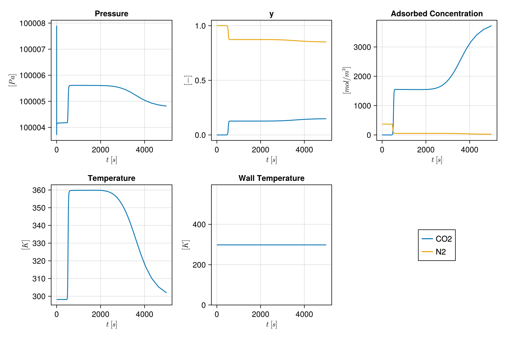
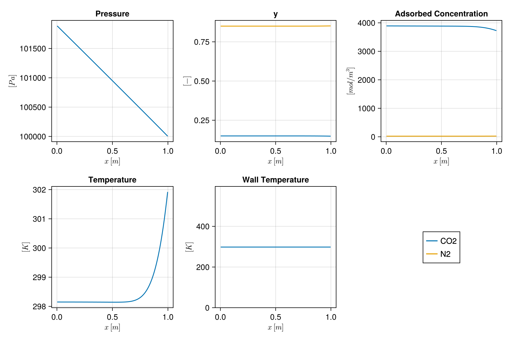

Direct Column Breakthrough simulation
This example shows how to set up and run a direct column breakthrough (DCB) simulation as described in Haghpanah et al. 2013. A two-component flue gas (CO₂ and N₂) is fed into a column of zeolite 13X initially filled with N₂, until CO₂ breaks through at the outlet.
Adsorption on zeolite 13X follows a dual-site Langmuir isotherm. The feed enters the bottom of the column at a fixed velocity, and the top is open at the feed pressure. There is no heat transfer between the column and its wall.
import Mocca
using Mocca.UnitsGas, adsorbent and column
The gas and adsorbent are those of the paper; see the cyclic VSA example. For the DCB the heat transfer coefficients to the wall are zero.
gas = Mocca.haghpanah_2013_gas()
feed = Mocca.Feed(gas; composition = (CO2 = 0.15, N2 = 0.85), temperature = 298.15, pressure = 1bar)
adsorbent = Mocca.load_adsorbent("zeolite_13x_haghpanah_2013")
column = Mocca.Column(length = 1.0, radius = 0.1445, outer_radius = 0.162, porosity = 0.37,
axial_conductivity = 0.0903, inner_heat_transfer = 0.0, outer_heat_transfer = 0.0)Column 1.0 m long, radius 0.1445 m (wall to 0.162 m), bed porosity 0.37The gas velocity follows Darcy's law,
\[v = -\frac{k}{\mu}(\nabla P)\]
with the permeability k of a packed bed of particles of diameter $d_p$ and bed porosity $\varepsilon$ from the Kozeny–Carman relation,
\[k = \frac{4}{150}\frac{\varepsilon^3}{(1-\varepsilon)^2} \left(\frac{d_p}{2}\right)^2.\]
add_bed! computes it, and the axial dispersion, from the adsorbent and column.
ncells = 200
fs = Mocca.Flowsheet(gas, feed)
Mocca.add_bed!(fs, :Bed, adsorbent, column; ncells = ncells)
Mocca.add_device!(fs, :V_feed, :feed; at = (:Bed, :bottom))
Mocca.add_device!(fs, :V_product, :product; at = (:Bed, :top))Flowsheet with 1 unit and 2 devices for CO2, N2
Bed: fixed bed of zeolite 13X, 200 cells
bottom V_feed (feed), from boundary at 1.0 bar
top V_product (product), to boundary at 1.0 bar
The breakthrough as a one-step cycle
A single adsorption step of 5000 s at an interstitial velocity of 1 m/s. The column starts at the feed pressure, the lowest pressure of this cycle, full of nitrogen.
cycle = Mocca.Cycle([Mocca.Adsorb(5000.0; velocity = 1.0)])
process = Mocca.Process(fs, cycle; timestepping = Mocca.TimeStepping(max_dt = 5000.0, first_dt = 5000.0))Process: CO2/N2 feed at 1.0 bar, 298.15 K, capturing CO2
Bed: fixed bed of zeolite 13X, 200 cells
bottom V_feed (feed), from boundary at 1.0 bar
top V_product (product), to boundary at 1.0 bar
cycle of 1 stages, 5000.0 s:
adsorption 5000.0 s V_feed, V_product
Run the simulation
One report step of 5000 s, which the solver divides according to target changes of the state variables of the bed per step.
result = Mocca.simulate(process; timestep_selector_cfg = (Bed = (y = 0.01, Temperature = 10.0, Pressure = 10.0),))Mocca.ProcessResult(Process("", Flowsheet(UnitNetwork(Dict{Symbol, Jutul.SimulationModel{<:Any, <:MoccaSystem, <:Any, <:Any}}(:Bed => Jutul.SimulationModel{Jutul.DiscretizedDomain{Jutul.CartesianMesh{Tuple{Int64, Int64, Int64}, Tuple{Float64, Float64, Float64}, Vector{Float64}, Jutul.MeshEntityTags{Int64}}, @NamedTuple{mass_flow::Jutul.PotentialFlow{:generic, Vector{Jutul.TPFA{Int64}}, Vector{Jutul.SPU{Int64}}, @NamedTuple{cells::Vector{Int64}, faces::Vector{Int64}, face_pos::Vector{Int64}, face_sign::Vector{Int64}}}}, Dict{Jutul.JutulEntity, Int64}, Jutul.TrivialGlobalMap}, FixedBed{2, Float64, DualSiteLangmuir{2, Float64}, LinearDrivingForce{Float64, Float64}, WithWall}, Jutul.FullyImplicitFormulation, Jutul.DefaultContext, Jutul.DataDomain{Jutul.CartesianMesh{Tuple{Int64, Int64, Int64}, Tuple{Float64, Float64, Float64}, Vector{Float64}, Jutul.MeshEntityTags{Int64}}, Dict{Jutul.JutulEntity, Int64}, OrderedCollections.OrderedDict{Symbol, Any}}, OrderedCollections.OrderedDict{Symbol, Jutul.JutulVariables}, OrderedCollections.OrderedDict{Symbol, Jutul.JutulVariables}, OrderedCollections.OrderedDict{Symbol, Jutul.JutulVariables}, OrderedCollections.OrderedDict{Symbol, Jutul.JutulEquation}, Vector{Symbol}, OrderedCollections.OrderedDict{Symbol, Any}}(DiscretizedDomain with CartesianMesh (3D) with 200x1x1=200 cells and discretizations for mass_flow
, FixedBed{2, Float64, DualSiteLangmuir{2, Float64}, LinearDrivingForce{Float64, Float64}, WithWall}(["CO2", "N2"], [0.04401, 0.028], [697.5687, 1096.4], [697.5687, 1096.4], DualSiteLangmuir{2, Float64}([3489.44, 6613.551], [8.65e-7, 2.5e-6], [-36641.21, -15800.0], [2872.35, 0.0], [2.63e-8, 0.0], [-35690.66, 0.0], [-38690.992593180876, -18278.95618937]), LinearDrivingForce{Float64, Float64}(1.6e-5, 3.0, 0.35, 0.002), WithWall()), Jutul.DefaultContext(Jutul.EquationMajorLayout(false), 9223372036854775807, 1), Jutul.FullyImplicitFormulation(), Jutul.DataDomain{Jutul.CartesianMesh{Tuple{Int64, Int64, Int64}, Tuple{Float64, Float64, Float64}, Vector{Float64}, Jutul.MeshEntityTags{Int64}}, Dict{Jutul.JutulEntity, Int64}, OrderedCollections.OrderedDict{Symbol, Any}}(CartesianMesh (3D) with 200x1x1=200 cells, Dict{Jutul.JutulEntity, Int64}(Jutul.Cells() => 200, Jutul.NoEntity() => 1, Unit() => 1, Jutul.Faces() => 199, Jutul.BoundaryFaces() => 802, Jutul.HalfFaces() => 398), OrderedCollections.OrderedDict{Symbol, Any}(:porosity => ([0.37, 0.37, 0.37, 0.37, 0.37, 0.37, 0.37, 0.37, 0.37, 0.37 … 0.37, 0.37, 0.37, 0.37, 0.37, 0.37, 0.37, 0.37, 0.37, 0.37], Jutul.Cells()), :permeability => ([3.403241790543378e-9, 3.403241790543378e-9, 3.403241790543378e-9, 3.403241790543378e-9, 3.403241790543378e-9, 3.403241790543378e-9, 3.403241790543378e-9, 3.403241790543378e-9, 3.403241790543378e-9, 3.403241790543378e-9 … 3.403241790543378e-9, 3.403241790543378e-9, 3.403241790543378e-9, 3.403241790543378e-9, 3.403241790543378e-9, 3.403241790543378e-9, 3.403241790543378e-9, 3.403241790543378e-9, 3.403241790543378e-9, 3.403241790543378e-9], Jutul.Cells()), :neighbors => ([1 2 … 198 199; 2 3 … 199 200], Jutul.Faces()), :areas => ([0.06559724000511828, 0.06559724000511828, 0.06559724000511828, 0.06559724000511828, 0.06559724000511828, 0.06559724000511828, 0.06559724000511828, 0.06559724000511828, 0.06559724000511828, 0.06559724000511828 … 0.06559724000511828, 0.06559724000511828, 0.06559724000511828, 0.06559724000511828, 0.06559724000511828, 0.06559724000511828, 0.06559724000511828, 0.06559724000511828, 0.06559724000511828, 0.06559724000511828], Jutul.Faces()), :normals => ([1.0 1.0 … 1.0 1.0; 0.0 0.0 … 0.0 0.0; 0.0 0.0 … 0.0 0.0], Jutul.Faces()), :face_centroids => ([0.005 0.01 … 0.9899999999999999 0.9949999999999999; 0.12805979072792353 0.12805979072792353 … 0.12805979072792353 0.12805979072792353; 0.12805979072792353 0.12805979072792353 … 0.12805979072792353 0.12805979072792353], Jutul.Faces()), :cell_centroids => ([0.0025 0.0075 … 0.9924999999999999 0.9974999999999999; 0.12805979072792353 0.12805979072792353 … 0.12805979072792353 0.12805979072792353; 0.12805979072792353 0.12805979072792353 … 0.12805979072792353 0.12805979072792353], Jutul.Cells()), :volumes => ([0.0003279862000255914, 0.0003279862000255914, 0.0003279862000255914, 0.0003279862000255914, 0.0003279862000255914, 0.0003279862000255914, 0.0003279862000255914, 0.0003279862000255914, 0.0003279862000255914, 0.0003279862000255914 … 0.0003279862000255914, 0.0003279862000255914, 0.0003279862000255914, 0.0003279862000255914, 0.0003279862000255914, 0.0003279862000255914, 0.0003279862000255914, 0.0003279862000255914, 0.0003279862000255914, 0.0003279862000255914], Jutul.Cells()), :half_face_cells => ([1, 2, 2, 3, 3, 4, 4, 5, 5, 6 … 195, 196, 196, 197, 197, 198, 198, 199, 199, 200], Jutul.HalfFaces()), :half_face_faces => ([1, 1, 2, 2, 3, 3, 4, 4, 5, 5 … 195, 195, 196, 196, 197, 197, 198, 198, 199, 199], Jutul.HalfFaces())…)), OrderedCollections.OrderedDict{Symbol, Jutul.JutulVariables}(:Pressure => Mocca.Pressure(1000.0, Inf, 0.2, 100000.0), :y => Mocca.GasMoleFractions(0.2), :AdsorbedConcentration => Mocca.AdsorbedConcentration(), :Temperature => Mocca.Temperature(200.0, Inf, 0.2), :WallTemperature => Mocca.Temperature(200.0, Inf, 0.2)), OrderedCollections.OrderedDict{Symbol, Jutul.JutulVariables}(:TotalMolarConcentration => Mocca.TotalMolarConcentration(), :MolarConcentration => Mocca.MolarConcentration(), :AverageMolarMass => Mocca.AverageMolarMass(), :ComponentMasses => Mocca.ComponentMasses(), :AdsorptionMassTransfer => Mocca.AdsorptionMassTransfer(), :AdsorbedLoading => Mocca.AdsorbedLoading(), :ColumnConservedEnergy => Mocca.ColumnEnergy(), :ConservedPressure => Mocca.ConservedPressure(), :WallConservedEnergy => Mocca.WallEnergy(), :ΔH => Mocca.EnthalpyChange()…), OrderedCollections.OrderedDict{Symbol, Jutul.JutulVariables}(:Transmissibilities => Mocca.Transmissibilities(), :SolidVolume => Mocca.BulkVolume(), :FluidVolume => Mocca.FluidVolume(), :WallAreaOut => Mocca.WallArea{:out}(), :WallAreaIn => Mocca.WallArea{:in}(), :CellDx => Mocca.CellDx(), :Permeability => Mocca.Permeability(), :ThermalConductivities => Mocca.ThermalConductivities(), :DispersionTransmissibilities => Mocca.DispersionTransmissibilities(), :AxialDispersion => Mocca.AxialDispersion()…), OrderedCollections.OrderedDict{Symbol, Jutul.JutulEquation}(:mass_conservation => Jutul.ConservationLaw{:ComponentMasses, Jutul.PotentialFlow{:generic, Vector{Jutul.TPFA{Int64}}, Vector{Jutul.SPU{Int64}}, @NamedTuple{cells::Vector{Int64}, faces::Vector{Int64}, face_pos::Vector{Int64}, face_sign::Vector{Int64}}}, Jutul.DefaultFlux, 2}(Jutul.PotentialFlow{:generic, Vector{Jutul.TPFA{Int64}}, Vector{Jutul.SPU{Int64}}, @NamedTuple{cells::Vector{Int64}, faces::Vector{Int64}, face_pos::Vector{Int64}, face_sign::Vector{Int64}}}(Jutul.TPFA{Int64}[Jutul.TPFA{Int64}(1, 2, 1), Jutul.TPFA{Int64}(2, 3, 1), Jutul.TPFA{Int64}(3, 4, 1), Jutul.TPFA{Int64}(4, 5, 1), Jutul.TPFA{Int64}(5, 6, 1), Jutul.TPFA{Int64}(6, 7, 1), Jutul.TPFA{Int64}(7, 8, 1), Jutul.TPFA{Int64}(8, 9, 1), Jutul.TPFA{Int64}(9, 10, 1), Jutul.TPFA{Int64}(10, 11, 1) … Jutul.TPFA{Int64}(190, 191, 1), Jutul.TPFA{Int64}(191, 192, 1), Jutul.TPFA{Int64}(192, 193, 1), Jutul.TPFA{Int64}(193, 194, 1), Jutul.TPFA{Int64}(194, 195, 1), Jutul.TPFA{Int64}(195, 196, 1), Jutul.TPFA{Int64}(196, 197, 1), Jutul.TPFA{Int64}(197, 198, 1), Jutul.TPFA{Int64}(198, 199, 1), Jutul.TPFA{Int64}(199, 200, 1)], Jutul.SPU{Int64}[Jutul.SPU{Int64}(1, 2), Jutul.SPU{Int64}(2, 3), Jutul.SPU{Int64}(3, 4), Jutul.SPU{Int64}(4, 5), Jutul.SPU{Int64}(5, 6), Jutul.SPU{Int64}(6, 7), Jutul.SPU{Int64}(7, 8), Jutul.SPU{Int64}(8, 9), Jutul.SPU{Int64}(9, 10), Jutul.SPU{Int64}(10, 11) … Jutul.SPU{Int64}(190, 191), Jutul.SPU{Int64}(191, 192), Jutul.SPU{Int64}(192, 193), Jutul.SPU{Int64}(193, 194), Jutul.SPU{Int64}(194, 195), Jutul.SPU{Int64}(195, 196), Jutul.SPU{Int64}(196, 197), Jutul.SPU{Int64}(197, 198), Jutul.SPU{Int64}(198, 199), Jutul.SPU{Int64}(199, 200)], (cells = [2, 1, 3, 2, 4, 3, 5, 4, 6, 5 … 196, 195, 197, 196, 198, 197, 199, 198, 200, 199], faces = [1, 1, 2, 2, 3, 3, 4, 4, 5, 5 … 195, 195, 196, 196, 197, 197, 198, 198, 199, 199], face_pos = [1, 2, 4, 6, 8, 10, 12, 14, 16, 18 … 382, 384, 386, 388, 390, 392, 394, 396, 398, 399], face_sign = [1, -1, 1, -1, 1, -1, 1, -1, 1, -1 … 1, -1, 1, -1, 1, -1, 1, -1, 1, -1])), Jutul.DefaultFlux()), :mass_transfer => Jutul.ConservationLaw{:AdsorbedLoading, Jutul.PotentialFlow{:generic, Vector{Jutul.TPFA{Int64}}, Vector{Jutul.SPU{Int64}}, @NamedTuple{cells::Vector{Int64}, faces::Vector{Int64}, face_pos::Vector{Int64}, face_sign::Vector{Int64}}}, Jutul.DefaultFlux, 2}(Jutul.PotentialFlow{:generic, Vector{Jutul.TPFA{Int64}}, Vector{Jutul.SPU{Int64}}, @NamedTuple{cells::Vector{Int64}, faces::Vector{Int64}, face_pos::Vector{Int64}, face_sign::Vector{Int64}}}(Jutul.TPFA{Int64}[Jutul.TPFA{Int64}(1, 2, 1), Jutul.TPFA{Int64}(2, 3, 1), Jutul.TPFA{Int64}(3, 4, 1), Jutul.TPFA{Int64}(4, 5, 1), Jutul.TPFA{Int64}(5, 6, 1), Jutul.TPFA{Int64}(6, 7, 1), Jutul.TPFA{Int64}(7, 8, 1), Jutul.TPFA{Int64}(8, 9, 1), Jutul.TPFA{Int64}(9, 10, 1), Jutul.TPFA{Int64}(10, 11, 1) … Jutul.TPFA{Int64}(190, 191, 1), Jutul.TPFA{Int64}(191, 192, 1), Jutul.TPFA{Int64}(192, 193, 1), Jutul.TPFA{Int64}(193, 194, 1), Jutul.TPFA{Int64}(194, 195, 1), Jutul.TPFA{Int64}(195, 196, 1), Jutul.TPFA{Int64}(196, 197, 1), Jutul.TPFA{Int64}(197, 198, 1), Jutul.TPFA{Int64}(198, 199, 1), Jutul.TPFA{Int64}(199, 200, 1)], Jutul.SPU{Int64}[Jutul.SPU{Int64}(1, 2), Jutul.SPU{Int64}(2, 3), Jutul.SPU{Int64}(3, 4), Jutul.SPU{Int64}(4, 5), Jutul.SPU{Int64}(5, 6), Jutul.SPU{Int64}(6, 7), Jutul.SPU{Int64}(7, 8), Jutul.SPU{Int64}(8, 9), Jutul.SPU{Int64}(9, 10), Jutul.SPU{Int64}(10, 11) … Jutul.SPU{Int64}(190, 191), Jutul.SPU{Int64}(191, 192), Jutul.SPU{Int64}(192, 193), Jutul.SPU{Int64}(193, 194), Jutul.SPU{Int64}(194, 195), Jutul.SPU{Int64}(195, 196), Jutul.SPU{Int64}(196, 197), Jutul.SPU{Int64}(197, 198), Jutul.SPU{Int64}(198, 199), Jutul.SPU{Int64}(199, 200)], (cells = [2, 1, 3, 2, 4, 3, 5, 4, 6, 5 … 196, 195, 197, 196, 198, 197, 199, 198, 200, 199], faces = [1, 1, 2, 2, 3, 3, 4, 4, 5, 5 … 195, 195, 196, 196, 197, 197, 198, 198, 199, 199], face_pos = [1, 2, 4, 6, 8, 10, 12, 14, 16, 18 … 382, 384, 386, 388, 390, 392, 394, 396, 398, 399], face_sign = [1, -1, 1, -1, 1, -1, 1, -1, 1, -1 … 1, -1, 1, -1, 1, -1, 1, -1, 1, -1])), Jutul.DefaultFlux()), :energy_column => Jutul.ConservationLaw{:ColumnConservedEnergy, Jutul.PotentialFlow{:generic, Vector{Jutul.TPFA{Int64}}, Vector{Jutul.SPU{Int64}}, @NamedTuple{cells::Vector{Int64}, faces::Vector{Int64}, face_pos::Vector{Int64}, face_sign::Vector{Int64}}}, Jutul.DefaultFlux, 1}(Jutul.PotentialFlow{:generic, Vector{Jutul.TPFA{Int64}}, Vector{Jutul.SPU{Int64}}, @NamedTuple{cells::Vector{Int64}, faces::Vector{Int64}, face_pos::Vector{Int64}, face_sign::Vector{Int64}}}(Jutul.TPFA{Int64}[Jutul.TPFA{Int64}(1, 2, 1), Jutul.TPFA{Int64}(2, 3, 1), Jutul.TPFA{Int64}(3, 4, 1), Jutul.TPFA{Int64}(4, 5, 1), Jutul.TPFA{Int64}(5, 6, 1), Jutul.TPFA{Int64}(6, 7, 1), Jutul.TPFA{Int64}(7, 8, 1), Jutul.TPFA{Int64}(8, 9, 1), Jutul.TPFA{Int64}(9, 10, 1), Jutul.TPFA{Int64}(10, 11, 1) … Jutul.TPFA{Int64}(190, 191, 1), Jutul.TPFA{Int64}(191, 192, 1), Jutul.TPFA{Int64}(192, 193, 1), Jutul.TPFA{Int64}(193, 194, 1), Jutul.TPFA{Int64}(194, 195, 1), Jutul.TPFA{Int64}(195, 196, 1), Jutul.TPFA{Int64}(196, 197, 1), Jutul.TPFA{Int64}(197, 198, 1), Jutul.TPFA{Int64}(198, 199, 1), Jutul.TPFA{Int64}(199, 200, 1)], Jutul.SPU{Int64}[Jutul.SPU{Int64}(1, 2), Jutul.SPU{Int64}(2, 3), Jutul.SPU{Int64}(3, 4), Jutul.SPU{Int64}(4, 5), Jutul.SPU{Int64}(5, 6), Jutul.SPU{Int64}(6, 7), Jutul.SPU{Int64}(7, 8), Jutul.SPU{Int64}(8, 9), Jutul.SPU{Int64}(9, 10), Jutul.SPU{Int64}(10, 11) … Jutul.SPU{Int64}(190, 191), Jutul.SPU{Int64}(191, 192), Jutul.SPU{Int64}(192, 193), Jutul.SPU{Int64}(193, 194), Jutul.SPU{Int64}(194, 195), Jutul.SPU{Int64}(195, 196), Jutul.SPU{Int64}(196, 197), Jutul.SPU{Int64}(197, 198), Jutul.SPU{Int64}(198, 199), Jutul.SPU{Int64}(199, 200)], (cells = [2, 1, 3, 2, 4, 3, 5, 4, 6, 5 … 196, 195, 197, 196, 198, 197, 199, 198, 200, 199], faces = [1, 1, 2, 2, 3, 3, 4, 4, 5, 5 … 195, 195, 196, 196, 197, 197, 198, 198, 199, 199], face_pos = [1, 2, 4, 6, 8, 10, 12, 14, 16, 18 … 382, 384, 386, 388, 390, 392, 394, 396, 398, 399], face_sign = [1, -1, 1, -1, 1, -1, 1, -1, 1, -1 … 1, -1, 1, -1, 1, -1, 1, -1, 1, -1])), Jutul.DefaultFlux()), :energy_wall => Jutul.ConservationLaw{:WallConservedEnergy, Jutul.PotentialFlow{:generic, Vector{Jutul.TPFA{Int64}}, Vector{Jutul.SPU{Int64}}, @NamedTuple{cells::Vector{Int64}, faces::Vector{Int64}, face_pos::Vector{Int64}, face_sign::Vector{Int64}}}, Jutul.DefaultFlux, 1}(Jutul.PotentialFlow{:generic, Vector{Jutul.TPFA{Int64}}, Vector{Jutul.SPU{Int64}}, @NamedTuple{cells::Vector{Int64}, faces::Vector{Int64}, face_pos::Vector{Int64}, face_sign::Vector{Int64}}}(Jutul.TPFA{Int64}[Jutul.TPFA{Int64}(1, 2, 1), Jutul.TPFA{Int64}(2, 3, 1), Jutul.TPFA{Int64}(3, 4, 1), Jutul.TPFA{Int64}(4, 5, 1), Jutul.TPFA{Int64}(5, 6, 1), Jutul.TPFA{Int64}(6, 7, 1), Jutul.TPFA{Int64}(7, 8, 1), Jutul.TPFA{Int64}(8, 9, 1), Jutul.TPFA{Int64}(9, 10, 1), Jutul.TPFA{Int64}(10, 11, 1) … Jutul.TPFA{Int64}(190, 191, 1), Jutul.TPFA{Int64}(191, 192, 1), Jutul.TPFA{Int64}(192, 193, 1), Jutul.TPFA{Int64}(193, 194, 1), Jutul.TPFA{Int64}(194, 195, 1), Jutul.TPFA{Int64}(195, 196, 1), Jutul.TPFA{Int64}(196, 197, 1), Jutul.TPFA{Int64}(197, 198, 1), Jutul.TPFA{Int64}(198, 199, 1), Jutul.TPFA{Int64}(199, 200, 1)], Jutul.SPU{Int64}[Jutul.SPU{Int64}(1, 2), Jutul.SPU{Int64}(2, 3), Jutul.SPU{Int64}(3, 4), Jutul.SPU{Int64}(4, 5), Jutul.SPU{Int64}(5, 6), Jutul.SPU{Int64}(6, 7), Jutul.SPU{Int64}(7, 8), Jutul.SPU{Int64}(8, 9), Jutul.SPU{Int64}(9, 10), Jutul.SPU{Int64}(10, 11) … Jutul.SPU{Int64}(190, 191), Jutul.SPU{Int64}(191, 192), Jutul.SPU{Int64}(192, 193), Jutul.SPU{Int64}(193, 194), Jutul.SPU{Int64}(194, 195), Jutul.SPU{Int64}(195, 196), Jutul.SPU{Int64}(196, 197), Jutul.SPU{Int64}(197, 198), Jutul.SPU{Int64}(198, 199), Jutul.SPU{Int64}(199, 200)], (cells = [2, 1, 3, 2, 4, 3, 5, 4, 6, 5 … 196, 195, 197, 196, 198, 197, 199, 198, 200, 199], faces = [1, 1, 2, 2, 3, 3, 4, 4, 5, 5 … 195, 195, 196, 196, 197, 197, 198, 198, 199, 199], face_pos = [1, 2, 4, 6, 8, 10, 12, 14, 16, 18 … 382, 384, 386, 388, 390, 392, 394, 396, 398, 399], face_sign = [1, -1, 1, -1, 1, -1, 1, -1, 1, -1 … 1, -1, 1, -1, 1, -1, 1, -1, 1, -1])), Jutul.DefaultFlux())), [:Pressure, :y, :AdsorbedConcentration, :Temperature, :WallTemperature], OrderedCollections.OrderedDict{Symbol, Any}(), 1), :V_feed => Jutul.SimulationModel{Jutul.DiscretizedDomain{Jutul.CartesianMesh{Tuple{Int64, Int64, Int64}, Tuple{Float64, Float64, Float64}, Vector{Float64}, Jutul.MeshEntityTags{Int64}}, Nothing, Dict{Jutul.JutulEntity, Int64}, Jutul.TrivialGlobalMap}, FlowDevice, Jutul.FullyImplicitFormulation, Jutul.DefaultContext, Jutul.DataDomain{Jutul.CartesianMesh{Tuple{Int64, Int64, Int64}, Tuple{Float64, Float64, Float64}, Vector{Float64}, Jutul.MeshEntityTags{Int64}}, Dict{Jutul.JutulEntity, Int64}, OrderedCollections.OrderedDict{Symbol, Any}}, OrderedCollections.OrderedDict{Symbol, Jutul.JutulVariables}, OrderedCollections.OrderedDict{Symbol, Jutul.JutulVariables}, OrderedCollections.OrderedDict{Symbol, Jutul.JutulVariables}, OrderedCollections.OrderedDict{Symbol, Jutul.JutulEquation}, Vector{Symbol}, OrderedCollections.OrderedDict{Symbol, Any}}(DiscretizedDomain with CartesianMesh (3D) with 1x1x1=1 cells
, FlowDevice(["CO2", "N2"]), Jutul.DefaultContext(Jutul.EquationMajorLayout(false), 9223372036854775807, 1), Jutul.FullyImplicitFormulation(), Jutul.DataDomain{Jutul.CartesianMesh{Tuple{Int64, Int64, Int64}, Tuple{Float64, Float64, Float64}, Vector{Float64}, Jutul.MeshEntityTags{Int64}}, Dict{Jutul.JutulEntity, Int64}, OrderedCollections.OrderedDict{Symbol, Any}}(CartesianMesh (3D) with 1x1x1=1 cells, Dict{Jutul.JutulEntity, Int64}(Jutul.Cells() => 1, Jutul.NoEntity() => 1, Unit() => 1, Jutul.Faces() => 0, Jutul.BoundaryFaces() => 6, Jutul.HalfFaces() => 0), OrderedCollections.OrderedDict{Symbol, Any}(:neighbors => (Matrix{Int64}(undef, 2, 0), Jutul.Faces()), :areas => (Float64[], Jutul.Faces()), :normals => (Matrix{Float64}(undef, 3, 0), Jutul.Faces()), :face_centroids => (Matrix{Float64}(undef, 3, 0), Jutul.Faces()), :cell_centroids => ([0.5; 0.5; 0.5;;], Jutul.Cells()), :volumes => ([1.0], Jutul.Cells()), :half_face_cells => (Int64[], Jutul.HalfFaces()), :half_face_faces => (Int64[], Jutul.HalfFaces()), :boundary_areas => ([1.0, 1.0, 1.0, 1.0, 1.0, 1.0], Jutul.BoundaryFaces()), :boundary_centroids => ([0.0 1.0 … 0.5 0.5; 0.5 0.5 … 0.5 0.5; 0.5 0.5 … 0.0 1.0], Jutul.BoundaryFaces())…)), OrderedCollections.OrderedDict{Symbol, Jutul.JutulVariables}(:InletPressure => Mocca.Pressure(1000.0, Inf, Inf, 100000.0), :InletTemperature => Mocca.Temperature(200.0, Inf, Inf), :InletComposition => Mocca.GasMoleFractions(Inf), :OutletPressure => Mocca.Pressure(1000.0, Inf, Inf, 100000.0), :OutletTemperature => Mocca.Temperature(200.0, Inf, Inf), :OutletComposition => Mocca.GasMoleFractions(Inf), :MolarFlow => Mocca.DeviceMolarFlow()), OrderedCollections.OrderedDict{Symbol, Jutul.JutulVariables}(), OrderedCollections.OrderedDict{Symbol, Jutul.JutulVariables}(), OrderedCollections.OrderedDict{Symbol, Jutul.JutulEquation}(:inlet_state => Mocca.PortStateEquation{1}(), :outlet_state => Mocca.PortStateEquation{2}(), :device_law => Mocca.DeviceLawEquation()), [:InletPressure, :InletTemperature, :InletComposition, :OutletPressure, :OutletTemperature, :OutletComposition, :MolarFlow], OrderedCollections.OrderedDict{Symbol, Any}(), 1), :V_product => Jutul.SimulationModel{Jutul.DiscretizedDomain{Jutul.CartesianMesh{Tuple{Int64, Int64, Int64}, Tuple{Float64, Float64, Float64}, Vector{Float64}, Jutul.MeshEntityTags{Int64}}, Nothing, Dict{Jutul.JutulEntity, Int64}, Jutul.TrivialGlobalMap}, FlowDevice, Jutul.FullyImplicitFormulation, Jutul.DefaultContext, Jutul.DataDomain{Jutul.CartesianMesh{Tuple{Int64, Int64, Int64}, Tuple{Float64, Float64, Float64}, Vector{Float64}, Jutul.MeshEntityTags{Int64}}, Dict{Jutul.JutulEntity, Int64}, OrderedCollections.OrderedDict{Symbol, Any}}, OrderedCollections.OrderedDict{Symbol, Jutul.JutulVariables}, OrderedCollections.OrderedDict{Symbol, Jutul.JutulVariables}, OrderedCollections.OrderedDict{Symbol, Jutul.JutulVariables}, OrderedCollections.OrderedDict{Symbol, Jutul.JutulEquation}, Vector{Symbol}, OrderedCollections.OrderedDict{Symbol, Any}}(DiscretizedDomain with CartesianMesh (3D) with 1x1x1=1 cells
, FlowDevice(["CO2", "N2"]), Jutul.DefaultContext(Jutul.EquationMajorLayout(false), 9223372036854775807, 1), Jutul.FullyImplicitFormulation(), Jutul.DataDomain{Jutul.CartesianMesh{Tuple{Int64, Int64, Int64}, Tuple{Float64, Float64, Float64}, Vector{Float64}, Jutul.MeshEntityTags{Int64}}, Dict{Jutul.JutulEntity, Int64}, OrderedCollections.OrderedDict{Symbol, Any}}(CartesianMesh (3D) with 1x1x1=1 cells, Dict{Jutul.JutulEntity, Int64}(Jutul.Cells() => 1, Jutul.NoEntity() => 1, Unit() => 1, Jutul.Faces() => 0, Jutul.BoundaryFaces() => 6, Jutul.HalfFaces() => 0), OrderedCollections.OrderedDict{Symbol, Any}(:neighbors => (Matrix{Int64}(undef, 2, 0), Jutul.Faces()), :areas => (Float64[], Jutul.Faces()), :normals => (Matrix{Float64}(undef, 3, 0), Jutul.Faces()), :face_centroids => (Matrix{Float64}(undef, 3, 0), Jutul.Faces()), :cell_centroids => ([0.5; 0.5; 0.5;;], Jutul.Cells()), :volumes => ([1.0], Jutul.Cells()), :half_face_cells => (Int64[], Jutul.HalfFaces()), :half_face_faces => (Int64[], Jutul.HalfFaces()), :boundary_areas => ([1.0, 1.0, 1.0, 1.0, 1.0, 1.0], Jutul.BoundaryFaces()), :boundary_centroids => ([0.0 1.0 … 0.5 0.5; 0.5 0.5 … 0.5 0.5; 0.5 0.5 … 0.0 1.0], Jutul.BoundaryFaces())…)), OrderedCollections.OrderedDict{Symbol, Jutul.JutulVariables}(:InletPressure => Mocca.Pressure(1000.0, Inf, Inf, 100000.0), :InletTemperature => Mocca.Temperature(200.0, Inf, Inf), :InletComposition => Mocca.GasMoleFractions(Inf), :OutletPressure => Mocca.Pressure(1000.0, Inf, Inf, 100000.0), :OutletTemperature => Mocca.Temperature(200.0, Inf, Inf), :OutletComposition => Mocca.GasMoleFractions(Inf), :MolarFlow => Mocca.DeviceMolarFlow()), OrderedCollections.OrderedDict{Symbol, Jutul.JutulVariables}(), OrderedCollections.OrderedDict{Symbol, Jutul.JutulVariables}(), OrderedCollections.OrderedDict{Symbol, Jutul.JutulEquation}(:inlet_state => Mocca.PortStateEquation{1}(), :outlet_state => Mocca.PortStateEquation{2}(), :device_law => Mocca.DeviceLawEquation()), [:InletPressure, :InletTemperature, :InletComposition, :OutletPressure, :OutletTemperature, :OutletComposition, :MolarFlow], OrderedCollections.OrderedDict{Symbol, Any}(), 1)), [:Bed, :V_feed, :V_product], AbstractConnection[StreamConnection(PortRef(:Bed, :bottom), PortRef(:V_feed, :outlet)), StreamConnection(PortRef(:Bed, :top), PortRef(:V_product, :inlet))], Dict{PortRef, PortCondition}(PortRef(:V_feed, :inlet) => PortCondition{Float64, Float64, Vector{Float64}}(100000.0, 298.15, [0.15, 0.85]), PortRef(:V_product, :outlet) => PortCondition{Float64, Float64, Vector{Float64}}(100000.0, 298.15, [1.0e-10, 0.9999999999]))), Gas(["CO2", "N2"], [0.04401, 0.028], [697.5687, 1096.4], 1.72e-5, 1.22638310956, 1.6e-5), Feed([0.15, 0.85], 298.15, 100000.0, [1.0e-10, 0.9999999999]), Dict(:V_feed => :feed, :V_product => :product), Dict{Symbol, Mocca.BedSpec}(:Bed => Mocca.BedSpec(Adsorbent("zeolite 13X", Mocca.DualSiteLangmuirData(["CO2", "N2"], [3489.44, 6613.551], [8.65e-7, 2.5e-6], [-36641.21, -15800.0], [2872.35, 0.0], [2.63e-8, 0.0], [-35690.66, 0.0], 298.15, :volume), 1130.0, 1070.0, 0.002, 0.35, 3.0, Dict("N2" => 1096.4, "CO2" => 697.5687), nothing, "Haghpanah et al., Ind. Eng. Chem. Res. 52 (2013) 4249, doi:10.1021/ie302658y. Capacities per m³ of adsorbent."), Column(1.0, 0.1445, 0.162, 0.37, 0.0903, Wall(7800.0, 502.0, 16.0), 0.0, 0.0, 298.15), 200, WithWall(), :adsorption, nothing, nothing, 1.0)), Set(PortRef[PortRef(:V_feed, :inlet), PortRef(:V_product, :outlet)])), Cycle(Pair{String, Vector{Any}}["" => [Adsorb(5000.0, 1.0, nothing, nothing, nothing, nothing, nothing, nothing, nothing, "")]], nothing), TimeStepping(5000.0, 5000.0, :auto), Mocca.ProcessOptions(1, 101325.0, 0.72, 1.4, 0.5), Dict{Symbol, Any}(), Dict{Symbol, Dict{Symbol, Any}}(), Any[], Jutul.MultiModel{nothing, Jutul.JutulStorage, Vector{Jutul.CrossTermPair}, Nothing, Jutul.DefaultContext, Dict{Symbol, Int64}, Vector{Jutul.DeviceExecutionMode}}(Jutul.JutulStorage(OrderedCollections.OrderedDict{Symbol, Any}(:Bed => Jutul.SimulationModel{Jutul.DiscretizedDomain{Jutul.CartesianMesh{Tuple{Int64, Int64, Int64}, Tuple{Float64, Float64, Float64}, Vector{Float64}, Jutul.MeshEntityTags{Int64}}, @NamedTuple{mass_flow::Jutul.PotentialFlow{:generic, Vector{Jutul.TPFA{Int64}}, Vector{Jutul.SPU{Int64}}, @NamedTuple{cells::Vector{Int64}, faces::Vector{Int64}, face_pos::Vector{Int64}, face_sign::Vector{Int64}}}}, Dict{Jutul.JutulEntity, Int64}, Jutul.TrivialGlobalMap}, FixedBed{2, Float64, DualSiteLangmuir{2, Float64}, LinearDrivingForce{Float64, Float64}, WithWall}, Jutul.FullyImplicitFormulation, Jutul.DefaultContext, Jutul.DataDomain{Jutul.CartesianMesh{Tuple{Int64, Int64, Int64}, Tuple{Float64, Float64, Float64}, Vector{Float64}, Jutul.MeshEntityTags{Int64}}, Dict{Jutul.JutulEntity, Int64}, OrderedCollections.OrderedDict{Symbol, Any}}, OrderedCollections.OrderedDict{Symbol, Jutul.JutulVariables}, OrderedCollections.OrderedDict{Symbol, Jutul.JutulVariables}, OrderedCollections.OrderedDict{Symbol, Jutul.JutulVariables}, OrderedCollections.OrderedDict{Symbol, Jutul.JutulEquation}, Vector{Symbol}, OrderedCollections.OrderedDict{Symbol, Any}}(DiscretizedDomain with CartesianMesh (3D) with 200x1x1=200 cells and discretizations for mass_flow
, FixedBed{2, Float64, DualSiteLangmuir{2, Float64}, LinearDrivingForce{Float64, Float64}, WithWall}(["CO2", "N2"], [0.04401, 0.028], [697.5687, 1096.4], [697.5687, 1096.4], DualSiteLangmuir{2, Float64}([3489.44, 6613.551], [8.65e-7, 2.5e-6], [-36641.21, -15800.0], [2872.35, 0.0], [2.63e-8, 0.0], [-35690.66, 0.0], [-38690.992593180876, -18278.95618937]), LinearDrivingForce{Float64, Float64}(1.6e-5, 3.0, 0.35, 0.002), WithWall()), Jutul.DefaultContext(Jutul.EquationMajorLayout(false), 9223372036854775807, 1), Jutul.FullyImplicitFormulation(), Jutul.DataDomain{Jutul.CartesianMesh{Tuple{Int64, Int64, Int64}, Tuple{Float64, Float64, Float64}, Vector{Float64}, Jutul.MeshEntityTags{Int64}}, Dict{Jutul.JutulEntity, Int64}, OrderedCollections.OrderedDict{Symbol, Any}}(CartesianMesh (3D) with 200x1x1=200 cells, Dict{Jutul.JutulEntity, Int64}(Jutul.Cells() => 200, Jutul.NoEntity() => 1, Unit() => 1, Jutul.Faces() => 199, Jutul.BoundaryFaces() => 802, Jutul.HalfFaces() => 398), OrderedCollections.OrderedDict{Symbol, Any}(:porosity => ([0.37, 0.37, 0.37, 0.37, 0.37, 0.37, 0.37, 0.37, 0.37, 0.37 … 0.37, 0.37, 0.37, 0.37, 0.37, 0.37, 0.37, 0.37, 0.37, 0.37], Jutul.Cells()), :permeability => ([3.403241790543378e-9, 3.403241790543378e-9, 3.403241790543378e-9, 3.403241790543378e-9, 3.403241790543378e-9, 3.403241790543378e-9, 3.403241790543378e-9, 3.403241790543378e-9, 3.403241790543378e-9, 3.403241790543378e-9 … 3.403241790543378e-9, 3.403241790543378e-9, 3.403241790543378e-9, 3.403241790543378e-9, 3.403241790543378e-9, 3.403241790543378e-9, 3.403241790543378e-9, 3.403241790543378e-9, 3.403241790543378e-9, 3.403241790543378e-9], Jutul.Cells()), :neighbors => ([1 2 … 198 199; 2 3 … 199 200], Jutul.Faces()), :areas => ([0.06559724000511828, 0.06559724000511828, 0.06559724000511828, 0.06559724000511828, 0.06559724000511828, 0.06559724000511828, 0.06559724000511828, 0.06559724000511828, 0.06559724000511828, 0.06559724000511828 … 0.06559724000511828, 0.06559724000511828, 0.06559724000511828, 0.06559724000511828, 0.06559724000511828, 0.06559724000511828, 0.06559724000511828, 0.06559724000511828, 0.06559724000511828, 0.06559724000511828], Jutul.Faces()), :normals => ([1.0 1.0 … 1.0 1.0; 0.0 0.0 … 0.0 0.0; 0.0 0.0 … 0.0 0.0], Jutul.Faces()), :face_centroids => ([0.005 0.01 … 0.9899999999999999 0.9949999999999999; 0.12805979072792353 0.12805979072792353 … 0.12805979072792353 0.12805979072792353; 0.12805979072792353 0.12805979072792353 … 0.12805979072792353 0.12805979072792353], Jutul.Faces()), :cell_centroids => ([0.0025 0.0075 … 0.9924999999999999 0.9974999999999999; 0.12805979072792353 0.12805979072792353 … 0.12805979072792353 0.12805979072792353; 0.12805979072792353 0.12805979072792353 … 0.12805979072792353 0.12805979072792353], Jutul.Cells()), :volumes => ([0.0003279862000255914, 0.0003279862000255914, 0.0003279862000255914, 0.0003279862000255914, 0.0003279862000255914, 0.0003279862000255914, 0.0003279862000255914, 0.0003279862000255914, 0.0003279862000255914, 0.0003279862000255914 … 0.0003279862000255914, 0.0003279862000255914, 0.0003279862000255914, 0.0003279862000255914, 0.0003279862000255914, 0.0003279862000255914, 0.0003279862000255914, 0.0003279862000255914, 0.0003279862000255914, 0.0003279862000255914], Jutul.Cells()), :half_face_cells => ([1, 2, 2, 3, 3, 4, 4, 5, 5, 6 … 195, 196, 196, 197, 197, 198, 198, 199, 199, 200], Jutul.HalfFaces()), :half_face_faces => ([1, 1, 2, 2, 3, 3, 4, 4, 5, 5 … 195, 195, 196, 196, 197, 197, 198, 198, 199, 199], Jutul.HalfFaces())…)), OrderedCollections.OrderedDict{Symbol, Jutul.JutulVariables}(:Pressure => Mocca.Pressure(1000.0, Inf, 0.2, 100000.0), :y => Mocca.GasMoleFractions(0.2), :AdsorbedConcentration => Mocca.AdsorbedConcentration(), :Temperature => Mocca.Temperature(200.0, Inf, 0.2), :WallTemperature => Mocca.Temperature(200.0, Inf, 0.2)), OrderedCollections.OrderedDict{Symbol, Jutul.JutulVariables}(:TotalMolarConcentration => Mocca.TotalMolarConcentration(), :MolarConcentration => Mocca.MolarConcentration(), :AverageMolarMass => Mocca.AverageMolarMass(), :ComponentMasses => Mocca.ComponentMasses(), :AdsorptionMassTransfer => Mocca.AdsorptionMassTransfer(), :AdsorbedLoading => Mocca.AdsorbedLoading(), :ColumnConservedEnergy => Mocca.ColumnEnergy(), :ConservedPressure => Mocca.ConservedPressure(), :WallConservedEnergy => Mocca.WallEnergy(), :ΔH => Mocca.EnthalpyChange()…), OrderedCollections.OrderedDict{Symbol, Jutul.JutulVariables}(:Transmissibilities => Mocca.Transmissibilities(), :SolidVolume => Mocca.BulkVolume(), :FluidVolume => Mocca.FluidVolume(), :WallAreaOut => Mocca.WallArea{:out}(), :WallAreaIn => Mocca.WallArea{:in}(), :CellDx => Mocca.CellDx(), :Permeability => Mocca.Permeability(), :ThermalConductivities => Mocca.ThermalConductivities(), :DispersionTransmissibilities => Mocca.DispersionTransmissibilities(), :AxialDispersion => Mocca.AxialDispersion()…), OrderedCollections.OrderedDict{Symbol, Jutul.JutulEquation}(:mass_conservation => Jutul.ConservationLaw{:ComponentMasses, Jutul.PotentialFlow{:generic, Vector{Jutul.TPFA{Int64}}, Vector{Jutul.SPU{Int64}}, @NamedTuple{cells::Vector{Int64}, faces::Vector{Int64}, face_pos::Vector{Int64}, face_sign::Vector{Int64}}}, Jutul.DefaultFlux, 2}(Jutul.PotentialFlow{:generic, Vector{Jutul.TPFA{Int64}}, Vector{Jutul.SPU{Int64}}, @NamedTuple{cells::Vector{Int64}, faces::Vector{Int64}, face_pos::Vector{Int64}, face_sign::Vector{Int64}}}(Jutul.TPFA{Int64}[Jutul.TPFA{Int64}(1, 2, 1), Jutul.TPFA{Int64}(2, 3, 1), Jutul.TPFA{Int64}(3, 4, 1), Jutul.TPFA{Int64}(4, 5, 1), Jutul.TPFA{Int64}(5, 6, 1), Jutul.TPFA{Int64}(6, 7, 1), Jutul.TPFA{Int64}(7, 8, 1), Jutul.TPFA{Int64}(8, 9, 1), Jutul.TPFA{Int64}(9, 10, 1), Jutul.TPFA{Int64}(10, 11, 1) … Jutul.TPFA{Int64}(190, 191, 1), Jutul.TPFA{Int64}(191, 192, 1), Jutul.TPFA{Int64}(192, 193, 1), Jutul.TPFA{Int64}(193, 194, 1), Jutul.TPFA{Int64}(194, 195, 1), Jutul.TPFA{Int64}(195, 196, 1), Jutul.TPFA{Int64}(196, 197, 1), Jutul.TPFA{Int64}(197, 198, 1), Jutul.TPFA{Int64}(198, 199, 1), Jutul.TPFA{Int64}(199, 200, 1)], Jutul.SPU{Int64}[Jutul.SPU{Int64}(1, 2), Jutul.SPU{Int64}(2, 3), Jutul.SPU{Int64}(3, 4), Jutul.SPU{Int64}(4, 5), Jutul.SPU{Int64}(5, 6), Jutul.SPU{Int64}(6, 7), Jutul.SPU{Int64}(7, 8), Jutul.SPU{Int64}(8, 9), Jutul.SPU{Int64}(9, 10), Jutul.SPU{Int64}(10, 11) … Jutul.SPU{Int64}(190, 191), Jutul.SPU{Int64}(191, 192), Jutul.SPU{Int64}(192, 193), Jutul.SPU{Int64}(193, 194), Jutul.SPU{Int64}(194, 195), Jutul.SPU{Int64}(195, 196), Jutul.SPU{Int64}(196, 197), Jutul.SPU{Int64}(197, 198), Jutul.SPU{Int64}(198, 199), Jutul.SPU{Int64}(199, 200)], (cells = [2, 1, 3, 2, 4, 3, 5, 4, 6, 5 … 196, 195, 197, 196, 198, 197, 199, 198, 200, 199], faces = [1, 1, 2, 2, 3, 3, 4, 4, 5, 5 … 195, 195, 196, 196, 197, 197, 198, 198, 199, 199], face_pos = [1, 2, 4, 6, 8, 10, 12, 14, 16, 18 … 382, 384, 386, 388, 390, 392, 394, 396, 398, 399], face_sign = [1, -1, 1, -1, 1, -1, 1, -1, 1, -1 … 1, -1, 1, -1, 1, -1, 1, -1, 1, -1])), Jutul.DefaultFlux()), :mass_transfer => Jutul.ConservationLaw{:AdsorbedLoading, Jutul.PotentialFlow{:generic, Vector{Jutul.TPFA{Int64}}, Vector{Jutul.SPU{Int64}}, @NamedTuple{cells::Vector{Int64}, faces::Vector{Int64}, face_pos::Vector{Int64}, face_sign::Vector{Int64}}}, Jutul.DefaultFlux, 2}(Jutul.PotentialFlow{:generic, Vector{Jutul.TPFA{Int64}}, Vector{Jutul.SPU{Int64}}, @NamedTuple{cells::Vector{Int64}, faces::Vector{Int64}, face_pos::Vector{Int64}, face_sign::Vector{Int64}}}(Jutul.TPFA{Int64}[Jutul.TPFA{Int64}(1, 2, 1), Jutul.TPFA{Int64}(2, 3, 1), Jutul.TPFA{Int64}(3, 4, 1), Jutul.TPFA{Int64}(4, 5, 1), Jutul.TPFA{Int64}(5, 6, 1), Jutul.TPFA{Int64}(6, 7, 1), Jutul.TPFA{Int64}(7, 8, 1), Jutul.TPFA{Int64}(8, 9, 1), Jutul.TPFA{Int64}(9, 10, 1), Jutul.TPFA{Int64}(10, 11, 1) … Jutul.TPFA{Int64}(190, 191, 1), Jutul.TPFA{Int64}(191, 192, 1), Jutul.TPFA{Int64}(192, 193, 1), Jutul.TPFA{Int64}(193, 194, 1), Jutul.TPFA{Int64}(194, 195, 1), Jutul.TPFA{Int64}(195, 196, 1), Jutul.TPFA{Int64}(196, 197, 1), Jutul.TPFA{Int64}(197, 198, 1), Jutul.TPFA{Int64}(198, 199, 1), Jutul.TPFA{Int64}(199, 200, 1)], Jutul.SPU{Int64}[Jutul.SPU{Int64}(1, 2), Jutul.SPU{Int64}(2, 3), Jutul.SPU{Int64}(3, 4), Jutul.SPU{Int64}(4, 5), Jutul.SPU{Int64}(5, 6), Jutul.SPU{Int64}(6, 7), Jutul.SPU{Int64}(7, 8), Jutul.SPU{Int64}(8, 9), Jutul.SPU{Int64}(9, 10), Jutul.SPU{Int64}(10, 11) … Jutul.SPU{Int64}(190, 191), Jutul.SPU{Int64}(191, 192), Jutul.SPU{Int64}(192, 193), Jutul.SPU{Int64}(193, 194), Jutul.SPU{Int64}(194, 195), Jutul.SPU{Int64}(195, 196), Jutul.SPU{Int64}(196, 197), Jutul.SPU{Int64}(197, 198), Jutul.SPU{Int64}(198, 199), Jutul.SPU{Int64}(199, 200)], (cells = [2, 1, 3, 2, 4, 3, 5, 4, 6, 5 … 196, 195, 197, 196, 198, 197, 199, 198, 200, 199], faces = [1, 1, 2, 2, 3, 3, 4, 4, 5, 5 … 195, 195, 196, 196, 197, 197, 198, 198, 199, 199], face_pos = [1, 2, 4, 6, 8, 10, 12, 14, 16, 18 … 382, 384, 386, 388, 390, 392, 394, 396, 398, 399], face_sign = [1, -1, 1, -1, 1, -1, 1, -1, 1, -1 … 1, -1, 1, -1, 1, -1, 1, -1, 1, -1])), Jutul.DefaultFlux()), :energy_column => Jutul.ConservationLaw{:ColumnConservedEnergy, Jutul.PotentialFlow{:generic, Vector{Jutul.TPFA{Int64}}, Vector{Jutul.SPU{Int64}}, @NamedTuple{cells::Vector{Int64}, faces::Vector{Int64}, face_pos::Vector{Int64}, face_sign::Vector{Int64}}}, Jutul.DefaultFlux, 1}(Jutul.PotentialFlow{:generic, Vector{Jutul.TPFA{Int64}}, Vector{Jutul.SPU{Int64}}, @NamedTuple{cells::Vector{Int64}, faces::Vector{Int64}, face_pos::Vector{Int64}, face_sign::Vector{Int64}}}(Jutul.TPFA{Int64}[Jutul.TPFA{Int64}(1, 2, 1), Jutul.TPFA{Int64}(2, 3, 1), Jutul.TPFA{Int64}(3, 4, 1), Jutul.TPFA{Int64}(4, 5, 1), Jutul.TPFA{Int64}(5, 6, 1), Jutul.TPFA{Int64}(6, 7, 1), Jutul.TPFA{Int64}(7, 8, 1), Jutul.TPFA{Int64}(8, 9, 1), Jutul.TPFA{Int64}(9, 10, 1), Jutul.TPFA{Int64}(10, 11, 1) … Jutul.TPFA{Int64}(190, 191, 1), Jutul.TPFA{Int64}(191, 192, 1), Jutul.TPFA{Int64}(192, 193, 1), Jutul.TPFA{Int64}(193, 194, 1), Jutul.TPFA{Int64}(194, 195, 1), Jutul.TPFA{Int64}(195, 196, 1), Jutul.TPFA{Int64}(196, 197, 1), Jutul.TPFA{Int64}(197, 198, 1), Jutul.TPFA{Int64}(198, 199, 1), Jutul.TPFA{Int64}(199, 200, 1)], Jutul.SPU{Int64}[Jutul.SPU{Int64}(1, 2), Jutul.SPU{Int64}(2, 3), Jutul.SPU{Int64}(3, 4), Jutul.SPU{Int64}(4, 5), Jutul.SPU{Int64}(5, 6), Jutul.SPU{Int64}(6, 7), Jutul.SPU{Int64}(7, 8), Jutul.SPU{Int64}(8, 9), Jutul.SPU{Int64}(9, 10), Jutul.SPU{Int64}(10, 11) … Jutul.SPU{Int64}(190, 191), Jutul.SPU{Int64}(191, 192), Jutul.SPU{Int64}(192, 193), Jutul.SPU{Int64}(193, 194), Jutul.SPU{Int64}(194, 195), Jutul.SPU{Int64}(195, 196), Jutul.SPU{Int64}(196, 197), Jutul.SPU{Int64}(197, 198), Jutul.SPU{Int64}(198, 199), Jutul.SPU{Int64}(199, 200)], (cells = [2, 1, 3, 2, 4, 3, 5, 4, 6, 5 … 196, 195, 197, 196, 198, 197, 199, 198, 200, 199], faces = [1, 1, 2, 2, 3, 3, 4, 4, 5, 5 … 195, 195, 196, 196, 197, 197, 198, 198, 199, 199], face_pos = [1, 2, 4, 6, 8, 10, 12, 14, 16, 18 … 382, 384, 386, 388, 390, 392, 394, 396, 398, 399], face_sign = [1, -1, 1, -1, 1, -1, 1, -1, 1, -1 … 1, -1, 1, -1, 1, -1, 1, -1, 1, -1])), Jutul.DefaultFlux()), :energy_wall => Jutul.ConservationLaw{:WallConservedEnergy, Jutul.PotentialFlow{:generic, Vector{Jutul.TPFA{Int64}}, Vector{Jutul.SPU{Int64}}, @NamedTuple{cells::Vector{Int64}, faces::Vector{Int64}, face_pos::Vector{Int64}, face_sign::Vector{Int64}}}, Jutul.DefaultFlux, 1}(Jutul.PotentialFlow{:generic, Vector{Jutul.TPFA{Int64}}, Vector{Jutul.SPU{Int64}}, @NamedTuple{cells::Vector{Int64}, faces::Vector{Int64}, face_pos::Vector{Int64}, face_sign::Vector{Int64}}}(Jutul.TPFA{Int64}[Jutul.TPFA{Int64}(1, 2, 1), Jutul.TPFA{Int64}(2, 3, 1), Jutul.TPFA{Int64}(3, 4, 1), Jutul.TPFA{Int64}(4, 5, 1), Jutul.TPFA{Int64}(5, 6, 1), Jutul.TPFA{Int64}(6, 7, 1), Jutul.TPFA{Int64}(7, 8, 1), Jutul.TPFA{Int64}(8, 9, 1), Jutul.TPFA{Int64}(9, 10, 1), Jutul.TPFA{Int64}(10, 11, 1) … Jutul.TPFA{Int64}(190, 191, 1), Jutul.TPFA{Int64}(191, 192, 1), Jutul.TPFA{Int64}(192, 193, 1), Jutul.TPFA{Int64}(193, 194, 1), Jutul.TPFA{Int64}(194, 195, 1), Jutul.TPFA{Int64}(195, 196, 1), Jutul.TPFA{Int64}(196, 197, 1), Jutul.TPFA{Int64}(197, 198, 1), Jutul.TPFA{Int64}(198, 199, 1), Jutul.TPFA{Int64}(199, 200, 1)], Jutul.SPU{Int64}[Jutul.SPU{Int64}(1, 2), Jutul.SPU{Int64}(2, 3), Jutul.SPU{Int64}(3, 4), Jutul.SPU{Int64}(4, 5), Jutul.SPU{Int64}(5, 6), Jutul.SPU{Int64}(6, 7), Jutul.SPU{Int64}(7, 8), Jutul.SPU{Int64}(8, 9), Jutul.SPU{Int64}(9, 10), Jutul.SPU{Int64}(10, 11) … Jutul.SPU{Int64}(190, 191), Jutul.SPU{Int64}(191, 192), Jutul.SPU{Int64}(192, 193), Jutul.SPU{Int64}(193, 194), Jutul.SPU{Int64}(194, 195), Jutul.SPU{Int64}(195, 196), Jutul.SPU{Int64}(196, 197), Jutul.SPU{Int64}(197, 198), Jutul.SPU{Int64}(198, 199), Jutul.SPU{Int64}(199, 200)], (cells = [2, 1, 3, 2, 4, 3, 5, 4, 6, 5 … 196, 195, 197, 196, 198, 197, 199, 198, 200, 199], faces = [1, 1, 2, 2, 3, 3, 4, 4, 5, 5 … 195, 195, 196, 196, 197, 197, 198, 198, 199, 199], face_pos = [1, 2, 4, 6, 8, 10, 12, 14, 16, 18 … 382, 384, 386, 388, 390, 392, 394, 396, 398, 399], face_sign = [1, -1, 1, -1, 1, -1, 1, -1, 1, -1 … 1, -1, 1, -1, 1, -1, 1, -1, 1, -1])), Jutul.DefaultFlux())), [:Pressure, :y, :AdsorbedConcentration, :Temperature, :WallTemperature], OrderedCollections.OrderedDict{Symbol, Any}(), 1), :V_feed => Jutul.SimulationModel{Jutul.DiscretizedDomain{Jutul.CartesianMesh{Tuple{Int64, Int64, Int64}, Tuple{Float64, Float64, Float64}, Vector{Float64}, Jutul.MeshEntityTags{Int64}}, Nothing, Dict{Jutul.JutulEntity, Int64}, Jutul.TrivialGlobalMap}, FlowDevice, Jutul.FullyImplicitFormulation, Jutul.DefaultContext, Jutul.DataDomain{Jutul.CartesianMesh{Tuple{Int64, Int64, Int64}, Tuple{Float64, Float64, Float64}, Vector{Float64}, Jutul.MeshEntityTags{Int64}}, Dict{Jutul.JutulEntity, Int64}, OrderedCollections.OrderedDict{Symbol, Any}}, OrderedCollections.OrderedDict{Symbol, Jutul.JutulVariables}, OrderedCollections.OrderedDict{Symbol, Jutul.JutulVariables}, OrderedCollections.OrderedDict{Symbol, Jutul.JutulVariables}, OrderedCollections.OrderedDict{Symbol, Jutul.JutulEquation}, Vector{Symbol}, OrderedCollections.OrderedDict{Symbol, Any}}(DiscretizedDomain with CartesianMesh (3D) with 1x1x1=1 cells
, FlowDevice(["CO2", "N2"]), Jutul.DefaultContext(Jutul.EquationMajorLayout(false), 9223372036854775807, 1), Jutul.FullyImplicitFormulation(), Jutul.DataDomain{Jutul.CartesianMesh{Tuple{Int64, Int64, Int64}, Tuple{Float64, Float64, Float64}, Vector{Float64}, Jutul.MeshEntityTags{Int64}}, Dict{Jutul.JutulEntity, Int64}, OrderedCollections.OrderedDict{Symbol, Any}}(CartesianMesh (3D) with 1x1x1=1 cells, Dict{Jutul.JutulEntity, Int64}(Jutul.Cells() => 1, Jutul.NoEntity() => 1, Unit() => 1, Jutul.Faces() => 0, Jutul.BoundaryFaces() => 6, Jutul.HalfFaces() => 0), OrderedCollections.OrderedDict{Symbol, Any}(:neighbors => (Matrix{Int64}(undef, 2, 0), Jutul.Faces()), :areas => (Float64[], Jutul.Faces()), :normals => (Matrix{Float64}(undef, 3, 0), Jutul.Faces()), :face_centroids => (Matrix{Float64}(undef, 3, 0), Jutul.Faces()), :cell_centroids => ([0.5; 0.5; 0.5;;], Jutul.Cells()), :volumes => ([1.0], Jutul.Cells()), :half_face_cells => (Int64[], Jutul.HalfFaces()), :half_face_faces => (Int64[], Jutul.HalfFaces()), :boundary_areas => ([1.0, 1.0, 1.0, 1.0, 1.0, 1.0], Jutul.BoundaryFaces()), :boundary_centroids => ([0.0 1.0 … 0.5 0.5; 0.5 0.5 … 0.5 0.5; 0.5 0.5 … 0.0 1.0], Jutul.BoundaryFaces())…)), OrderedCollections.OrderedDict{Symbol, Jutul.JutulVariables}(:InletPressure => Mocca.Pressure(1000.0, Inf, Inf, 100000.0), :InletTemperature => Mocca.Temperature(200.0, Inf, Inf), :InletComposition => Mocca.GasMoleFractions(Inf), :OutletPressure => Mocca.Pressure(1000.0, Inf, Inf, 100000.0), :OutletTemperature => Mocca.Temperature(200.0, Inf, Inf), :OutletComposition => Mocca.GasMoleFractions(Inf), :MolarFlow => Mocca.DeviceMolarFlow()), OrderedCollections.OrderedDict{Symbol, Jutul.JutulVariables}(), OrderedCollections.OrderedDict{Symbol, Jutul.JutulVariables}(), OrderedCollections.OrderedDict{Symbol, Jutul.JutulEquation}(:inlet_state => Mocca.PortStateEquation{1}(), :outlet_state => Mocca.PortStateEquation{2}(), :device_law => Mocca.DeviceLawEquation()), [:InletPressure, :InletTemperature, :InletComposition, :OutletPressure, :OutletTemperature, :OutletComposition, :MolarFlow], OrderedCollections.OrderedDict{Symbol, Any}(), 1), :V_product => Jutul.SimulationModel{Jutul.DiscretizedDomain{Jutul.CartesianMesh{Tuple{Int64, Int64, Int64}, Tuple{Float64, Float64, Float64}, Vector{Float64}, Jutul.MeshEntityTags{Int64}}, Nothing, Dict{Jutul.JutulEntity, Int64}, Jutul.TrivialGlobalMap}, FlowDevice, Jutul.FullyImplicitFormulation, Jutul.DefaultContext, Jutul.DataDomain{Jutul.CartesianMesh{Tuple{Int64, Int64, Int64}, Tuple{Float64, Float64, Float64}, Vector{Float64}, Jutul.MeshEntityTags{Int64}}, Dict{Jutul.JutulEntity, Int64}, OrderedCollections.OrderedDict{Symbol, Any}}, OrderedCollections.OrderedDict{Symbol, Jutul.JutulVariables}, OrderedCollections.OrderedDict{Symbol, Jutul.JutulVariables}, OrderedCollections.OrderedDict{Symbol, Jutul.JutulVariables}, OrderedCollections.OrderedDict{Symbol, Jutul.JutulEquation}, Vector{Symbol}, OrderedCollections.OrderedDict{Symbol, Any}}(DiscretizedDomain with CartesianMesh (3D) with 1x1x1=1 cells
, FlowDevice(["CO2", "N2"]), Jutul.DefaultContext(Jutul.EquationMajorLayout(false), 9223372036854775807, 1), Jutul.FullyImplicitFormulation(), Jutul.DataDomain{Jutul.CartesianMesh{Tuple{Int64, Int64, Int64}, Tuple{Float64, Float64, Float64}, Vector{Float64}, Jutul.MeshEntityTags{Int64}}, Dict{Jutul.JutulEntity, Int64}, OrderedCollections.OrderedDict{Symbol, Any}}(CartesianMesh (3D) with 1x1x1=1 cells, Dict{Jutul.JutulEntity, Int64}(Jutul.Cells() => 1, Jutul.NoEntity() => 1, Unit() => 1, Jutul.Faces() => 0, Jutul.BoundaryFaces() => 6, Jutul.HalfFaces() => 0), OrderedCollections.OrderedDict{Symbol, Any}(:neighbors => (Matrix{Int64}(undef, 2, 0), Jutul.Faces()), :areas => (Float64[], Jutul.Faces()), :normals => (Matrix{Float64}(undef, 3, 0), Jutul.Faces()), :face_centroids => (Matrix{Float64}(undef, 3, 0), Jutul.Faces()), :cell_centroids => ([0.5; 0.5; 0.5;;], Jutul.Cells()), :volumes => ([1.0], Jutul.Cells()), :half_face_cells => (Int64[], Jutul.HalfFaces()), :half_face_faces => (Int64[], Jutul.HalfFaces()), :boundary_areas => ([1.0, 1.0, 1.0, 1.0, 1.0, 1.0], Jutul.BoundaryFaces()), :boundary_centroids => ([0.0 1.0 … 0.5 0.5; 0.5 0.5 … 0.5 0.5; 0.5 0.5 … 0.0 1.0], Jutul.BoundaryFaces())…)), OrderedCollections.OrderedDict{Symbol, Jutul.JutulVariables}(:InletPressure => Mocca.Pressure(1000.0, Inf, Inf, 100000.0), :InletTemperature => Mocca.Temperature(200.0, Inf, Inf), :InletComposition => Mocca.GasMoleFractions(Inf), :OutletPressure => Mocca.Pressure(1000.0, Inf, Inf, 100000.0), :OutletTemperature => Mocca.Temperature(200.0, Inf, Inf), :OutletComposition => Mocca.GasMoleFractions(Inf), :MolarFlow => Mocca.DeviceMolarFlow()), OrderedCollections.OrderedDict{Symbol, Jutul.JutulVariables}(), OrderedCollections.OrderedDict{Symbol, Jutul.JutulVariables}(), OrderedCollections.OrderedDict{Symbol, Jutul.JutulEquation}(:inlet_state => Mocca.PortStateEquation{1}(), :outlet_state => Mocca.PortStateEquation{2}(), :device_law => Mocca.DeviceLawEquation()), [:InletPressure, :InletTemperature, :InletComposition, :OutletPressure, :OutletTemperature, :OutletComposition, :MolarFlow], OrderedCollections.OrderedDict{Symbol, Any}(), 1)), false), Jutul.CrossTermPair[Jutul.CrossTermPair(:V_feed, :Bed, :outlet_state, :outlet_state, Mocca.PortStateCT(1)), Jutul.CrossTermPair(:Bed, :V_feed, :mass_conservation, :mass_conservation, Mocca.StreamCT(1, 2)), Jutul.CrossTermPair(:Bed, :V_feed, :energy_column, :energy_column, Mocca.StreamCT(1, 2)), Jutul.CrossTermPair(:V_product, :Bed, :inlet_state, :inlet_state, Mocca.PortStateCT(200)), Jutul.CrossTermPair(:Bed, :V_product, :mass_conservation, :mass_conservation, Mocca.StreamCT(200, 1)), Jutul.CrossTermPair(:Bed, :V_product, :energy_column, :energy_column, Mocca.StreamCT(200, 1))], nothing, Jutul.DefaultContext(Jutul.EquationMajorLayout(false), 9223372036854775807, 1), nothing, false, Dict(:Bed => 1, :V_feed => 1, :V_product => 1), Jutul.DeviceExecutionMode[Jutul.SolveFullyOnDevice, Jutul.SolveFullyOnDevice, Jutul.SolveFullyOnDevice]), Dict{Symbol, Any}(:Bed => Dict{Symbol, Any}(:BedCrossSectionArea => [0.06559724000511827], :Transmissibilities => [4.46486537059445e-8, 4.4648653705944486e-8, 4.464865370594451e-8, 4.4648653705944486e-8, 4.4648653705944486e-8, 4.4648653705944486e-8, 4.4648653705944446e-8, 4.464865370594451e-8, 4.464865370594451e-8, 4.4648653705944446e-8 … 4.464865370594445e-8, 4.464865370594445e-8, 4.464865370594544e-8, 4.464865370594445e-8, 4.464865370594445e-8, 4.464865370594445e-8, 4.464865370594445e-8, 4.464865370594445e-8, 4.464865370594445e-8, 4.464865370594445e-8], :DispersionTransmissibilities => [4.854195760378753, 4.854195760378751, 4.854195760378754, 4.854195760378752, 4.854195760378752, 4.854195760378752, 4.854195760378748, 4.854195760378755, 4.854195760378755, 4.854195760378748 … 4.854195760378749, 4.854195760378749, 4.854195760378857, 4.854195760378749, 4.854195760378749, 4.854195760378749, 4.854195760378749, 4.854195760378749, 4.854195760378749, 4.854195760378749], :TimeScale => [1.0], :AdsorbentDensity => [1130.0], :OuterHeatTransferCoeff => [0.0], :InnerHeatTransferCoeff => [0.0], :SolidVolume => [0.00020663130601612258, 0.00020663130601612258, 0.00020663130601612258, 0.00020663130601612258, 0.00020663130601612258, 0.00020663130601612258, 0.00020663130601612258, 0.00020663130601612258, 0.00020663130601612258, 0.00020663130601612258 … 0.00020663130601612258, 0.00020663130601612258, 0.00020663130601612258, 0.00020663130601612258, 0.00020663130601612258, 0.00020663130601612258, 0.00020663130601612258, 0.00020663130601612258, 0.00020663130601612258, 0.00020663130601612258], :WallAreaIn => [0.004539601384437251, 0.004539601384437251, 0.004539601384437251, 0.004539601384437251, 0.004539601384437251, 0.004539601384437251, 0.004539601384437251, 0.004539601384437251, 0.004539601384437251, 0.004539601384437251 … 0.004539601384437251, 0.004539601384437251, 0.004539601384437251, 0.004539601384437251, 0.004539601384437251, 0.004539601384437251, 0.004539601384437251, 0.004539601384437251, 0.004539601384437251, 0.004539601384437251], :AdsorbentHeatCapacity => [1070.0]…), :V_feed => Dict{Symbol, Any}(), :V_product => Dict{Symbol, Any}()), Mocca.CompiledCycle(Stage[Stage("adsorption", 5000.0, Dict{Symbol, Any}(:V_feed => (law = VolumetricFlow{Float64}(0.02427097880189376), inlet = PortCondition{Float64, Float64, Vector{Float64}}(100000.0, 298.15, [0.15, 0.85])), :V_product => (law = LinearValve{Float64}(0.005191703919295869, 1.0), outlet = PortCondition{Float64, Float64, Vector{Float64}}(100000.0, 298.15, [1.0e-10, 0.9999999999]))))], Dict(:Bed => [100000.0, 100000.0]), Dict(:Bed => [1.0])), nothing, Mocca.WarmStart(nothing, nothing)), Any[OrderedCollections.OrderedDict{Symbol, Any}(:Bed => OrderedCollections.OrderedDict{Symbol, Any}(:Pressure => [103129.22133919805, 103119.50690802728, 103109.40507702235, 103098.88826034455, 103087.94380038211, 103076.56901172454, 103064.76911132739, 103052.55566649392, 103039.94523817944, 103026.95815713854 … 100150.00934336842, 100134.22729283776, 100118.44347860341, 100102.65781809189, 100086.87022866622, 100071.0806276254, 100055.28893220388, 100039.49505957114, 100023.69892683107, 100007.90045102111], :y => [0.11375807430819164 0.09029710454194453 … 1.0018472404835782e-10 1.0016331214452618e-10; 0.8862419256918084 0.9097028954580554 … 0.9999999998998153 0.9999999998998366], :AdsorbedConcentration => [128.207548126281 102.6639100095942 … 3.0732803492776555e-5 3.073276583040301e-5; 39.360721450284714 48.17137385941592 … 369.20625743825343 369.1684222902186], :Temperature => [297.5475467847404, 296.70186819102764, 296.17531287862124, 295.82571462565056, 295.609722776636, 295.4996892775856, 295.4733904044981, 295.51214320082147, 295.60006121652196, 295.7236198667566 … 298.155478623688, 298.1549132388138, 298.1543477727493, 298.1537822225297, 298.153216585187, 298.1526508577509, 298.1520850372483, 298.15151912072923, 298.1509531124665, 298.1503890285308], :WallTemperature => [298.15, 298.15, 298.15, 298.15, 298.15, 298.15, 298.15, 298.15, 298.15, 298.15 … 298.15, 298.15, 298.15, 298.15, 298.15, 298.15, 298.15, 298.15, 298.15, 298.15]), :V_feed => OrderedCollections.OrderedDict{Symbol, Any}(:InletPressure => [100000.0], :InletTemperature => [298.15], :InletComposition => [0.15; 0.85;;], :OutletPressure => [103129.22133919805], :OutletTemperature => [297.5475467847404], :OutletComposition => [0.11375807430819164; 0.8862419256918084;;], :MolarFlow => [1.0097181853042783]), :V_product => OrderedCollections.OrderedDict{Symbol, Any}(:InletPressure => [100007.90045102111], :InletTemperature => [298.1503890285308], :InletComposition => [1.0016331214452618e-10; 0.9999999998998366;;], :OutletPressure => [100000.0], :OutletTemperature => [298.15], :OutletComposition => [1.0e-10; 0.9999999999;;], :MolarFlow => [1.6547282963533874])), OrderedCollections.OrderedDict{Symbol, Any}(:Bed => OrderedCollections.OrderedDict{Symbol, Any}(:Pressure => [102220.07736902461, 102210.82587752474, 102201.6121394878, 102192.35617347942, 102182.9961989469, 102173.48675048994, 102163.79818719736, 102153.9154216973, 102143.83581615143, 102133.5665714781 … 100109.00347420241, 100097.53576644378, 100086.06649121652, 100074.59568018094, 100063.12336501107, 100051.6495773967, 100040.17434904542, 100028.69771168464, 100017.21969706367, 100005.74033695536], :y => [0.11909367089931334 0.09692395687621615 … 1.0005812342183558e-10 1.0005269176485664e-10; 0.8809063291006868 0.9030760431237839 … 0.9999999998999419 0.9999999998999471], :AdsorbedConcentration => [141.45032279468614 113.54860072758271 … 3.073281125965436e-5 3.073277209488523e-5; 30.99703214570185 37.981861364025974 … 369.20527256360396 369.16804833865456], :Temperature => [297.86363299264866, 296.90721939586996, 296.2878014095098, 295.8633935622421, 295.590038984591, 295.439311405391, 295.3873395225434, 295.4131081898393, 295.4980567319424, 295.6259795658455 … 298.1553987796233, 298.15484255230507, 298.1542862410498, 298.1537298440275, 298.1531733594061, 298.1526167853517, 298.1520601200287, 298.1515033616286, 298.15094651640226, 298.1503918053223], :WallTemperature => [298.15, 298.15, 298.15, 298.15, 298.15, 298.15, 298.15, 298.15, 298.15, 298.15 … 298.15, 298.15, 298.15, 298.15, 298.15, 298.15, 298.15, 298.15, 298.15, 298.15]), :V_feed => OrderedCollections.OrderedDict{Symbol, Any}(:InletPressure => [100000.0], :InletTemperature => [298.15], :InletComposition => [0.15; 0.85;;], :OutletPressure => [102220.07736902461], :OutletTemperature => [297.86363299264866], :OutletComposition => [0.11909367089931334; 0.8809063291006868;;], :MolarFlow => [1.0008169331875327]), :V_product => OrderedCollections.OrderedDict{Symbol, Any}(:InletPressure => [100005.74033695536], :InletTemperature => [298.1503918053223], :InletComposition => [1.0005269176485664e-10; 0.9999999998999471;;], :OutletPressure => [100000.0], :OutletTemperature => [298.15], :OutletComposition => [1.0e-10; 0.9999999999;;], :MolarFlow => [1.2022722133586559])), OrderedCollections.OrderedDict{Symbol, Any}(:Bed => OrderedCollections.OrderedDict{Symbol, Any}(:Pressure => [102127.51314412353, 102118.29851757019, 102109.15862994223, 102100.01068724012, 102090.78937539831, 102081.44567323773, 102071.94684070244, 102062.27538453437, 102052.42698401479, 102042.40777455895 … 100104.71864113281, 100093.70178667565, 100082.68338297479, 100071.66347137542, 100060.64209324076, 100049.61928995415, 100038.5951029212, 100027.56957357186, 100016.54274336259, 100005.51465377802], :y => [0.11955957931120514 0.09754425746450372 … 1.0004589176019473e-10 1.000419893958363e-10; 0.880440420688795 0.9024557425354963 … 0.9999999998999543 0.9999999998999579], :AdsorbedConcentration => [142.7779453000718 114.64264660255725 … 3.073281189100607e-5 3.073277259801888e-5; 30.35401727348476 37.1489275162341 … 369.20510738313124 369.16798872299154], :Temperature => [297.89818351022717, 296.93073940851576, 296.30183459208655, 295.869663970732, 295.5902773704794, 295.4352167397806, 295.3804691554457, 295.404790462102, 295.4893446253891, 295.6176444866525 … 298.15538444083415, 298.15482979424326, 298.1542750634921, 298.1537202468753, 298.15316534268555, 298.1526103492139, 298.15205526474944, 298.1515000876092, 298.1509448242541, 298.15039171616365], :WallTemperature => [298.15, 298.15, 298.15, 298.15, 298.15, 298.15, 298.15, 298.15, 298.15, 298.15 … 298.15, 298.15, 298.15, 298.15, 298.15, 298.15, 298.15, 298.15, 298.15, 298.15]), :V_feed => OrderedCollections.OrderedDict{Symbol, Any}(:InletPressure => [100000.0], :InletTemperature => [298.15], :InletComposition => [0.15; 0.85;;], :OutletPressure => [102127.51314412353], :OutletTemperature => [297.89818351022717], :OutletComposition => [0.11955957931120514; 0.880440420688795;;], :MolarFlow => [0.9999106548313353]), :V_product => OrderedCollections.OrderedDict{Symbol, Any}(:InletPressure => [100005.51465377802], :InletTemperature => [298.15039171616365], :InletComposition => [1.000419893958363e-10; 0.9999999998999579;;], :OutletPressure => [100000.0], :OutletTemperature => [298.15], :OutletComposition => [1.0e-10; 0.9999999999;;], :MolarFlow => [1.1550018918648917])), OrderedCollections.OrderedDict{Symbol, Any}(:Bed => OrderedCollections.OrderedDict{Symbol, Any}(:Pressure => [102118.25033868873, 102109.03929936499, 102099.9066334801, 102090.76929004284, 102081.56161680823, 102072.23424579807, 102062.75413222559, 102053.10354588571, 102043.27800097657, 102033.28352950727 … 100104.28871518842, 100093.31709814521, 100082.34393367666, 100071.36926407697, 100060.39313165876, 100049.4155787552, 100038.43664772215, 100027.45638094026, 100016.47482081705, 100005.49200978871], :y => [0.11960544418407365 0.09760579928775746 … 1.0004467459505501e-10 1.0004092423530874e-10; 0.8803945558159265 0.9023942007122425 … 0.9999999998999555 0.999999999899959], :AdsorbedConcentration => [142.910740100206 114.75210630317169 … 3.073281195269449e-5 3.073277264710478e-5; 30.291594782287607 37.06745726342893 … 369.2050901980446 369.16798253918995], :Temperature => [297.9016671487494, 296.93312068591194, 296.3032653727873, 295.870315779563, 295.59032309371037, 295.4348265669733, 295.37979936093177, 295.4039744698009, 295.48848824695585, 295.61682524152627 … 298.1553829433986, 298.15482846153145, 298.1542738954822, 298.1537192435581, 298.1531645040644, 298.1526096753047, 298.15205475558076, 298.1514997432222, 298.15094464471116, 298.15039170357784], :WallTemperature => [298.15, 298.15, 298.15, 298.15, 298.15, 298.15, 298.15, 298.15, 298.15, 298.15 … 298.15, 298.15, 298.15, 298.15, 298.15, 298.15, 298.15, 298.15, 298.15, 298.15]), :V_feed => OrderedCollections.OrderedDict{Symbol, Any}(:InletPressure => [100000.0], :InletTemperature => [298.15], :InletComposition => [0.15; 0.85;;], :OutletPressure => [102118.25033868873], :OutletTemperature => [297.9016671487494], :OutletComposition => [0.11960544418407365; 0.8803945558159265;;], :MolarFlow => [0.9998199645015433]), :V_product => OrderedCollections.OrderedDict{Symbol, Any}(:InletPressure => [100005.49200978871], :InletTemperature => [298.15039170357784], :InletComposition => [1.0004092423530874e-10; 0.999999999899959;;], :OutletPressure => [100000.0], :OutletTemperature => [298.15], :OutletComposition => [1.0e-10; 0.9999999999;;], :MolarFlow => [1.1502590206909042])), OrderedCollections.OrderedDict{Symbol, Any}(:Bed => OrderedCollections.OrderedDict{Symbol, Any}(:Pressure => [102108.2582572637, 102099.05097136046, 102089.92589358496, 102080.79971738133, 102071.60644176372, 102062.29633726293, 102052.83604089085, 102043.20757589841, 102033.40628618177, 102023.4380987171 … 100103.82334279503, 100092.90069252596, 100081.97649694933, 100071.05079936115, 100060.12364307634, 100049.19507143089, 100038.26512778396, 100027.33385552002, 100016.40129805093, 100005.46749881777], :y => [0.11965400014095355 0.09767148357230744 … 1.0004336796211587e-10 1.0003978064070307e-10; 0.8803459998590466 0.9023285164276925 … 0.9999999998999568 0.9999999998999601], :AdsorbedConcentration => [143.0541484269245 114.87034747874901 … 3.073281201761884e-5 3.073277269867724e-5; 30.22632138089337 36.98156961312127 … 369.2050708673987 369.1679756040641], :Temperature => [297.90546047393406, 296.93572490869514, 296.30484147980104, 295.8710478782415, 295.5903975847026, 295.4344275142591, 295.37909610047535, 295.4031117291034, 295.48758085370173, 295.61595732095293 … 298.1553812526775, 298.15482695639946, 298.15427257591637, 298.15371810954923, 298.15316355561697, 298.1526089124369, 298.15205417832453, 298.1514993516232, 298.15094443883805, 298.1503916857136], :WallTemperature => [298.15, 298.15, 298.15, 298.15, 298.15, 298.15, 298.15, 298.15, 298.15, 298.15 … 298.15, 298.15, 298.15, 298.15, 298.15, 298.15, 298.15, 298.15, 298.15, 298.15]), :V_feed => OrderedCollections.OrderedDict{Symbol, Any}(:InletPressure => [100000.0], :InletTemperature => [298.15], :InletComposition => [0.15; 0.85;;], :OutletPressure => [102108.2582572637], :OutletTemperature => [297.90546047393406], :OutletComposition => [0.11965400014095355; 0.8803459998590466;;], :MolarFlow => [0.9997221339721076]), :V_product => OrderedCollections.OrderedDict{Symbol, Any}(:InletPressure => [100005.46749881777], :InletTemperature => [298.1503916857136], :InletComposition => [1.0003978064070307e-10; 0.9999999998999601;;], :OutletPressure => [100000.0], :OutletTemperature => [298.15], :OutletComposition => [1.0e-10; 0.9999999999;;], :MolarFlow => [1.145125106405339])), OrderedCollections.OrderedDict{Symbol, Any}(:Bed => OrderedCollections.OrderedDict{Symbol, Any}(:Pressure => [102098.27874533189, 102089.0750992586, 102079.95741139025, 102070.84214014221, 102061.66295041476, 102052.3697623524, 102042.92890403463, 102033.32216039876, 102023.5447124203, 102013.60238850293 … 100103.35692588682, 100092.48335180865, 100081.60823472979, 100070.73161892255, 100059.85354867864, 100048.97406831133, 100038.0932221576, 100027.21105458018, 100016.32760996981, 100005.44293274687], :y => [0.11970158055106511 0.0977363497227656 … 1.0004206811581088e-10 1.0003864290163483e-10; 0.880298419448935 0.9022636502772343 … 0.9999999998999581 0.9999999998999612], :AdsorbedConcentration => [143.19770720483652 114.98874567534786 … 3.0732812080924624e-5 3.073277274887398e-5; 30.16305305980433 36.89763626066288 … 369.205050744897 369.1679684047367], :Temperature => [297.9092880677618, 296.93836374131695, 296.3064496391394, 295.8718084886308, 295.59049690726584, 295.4340500618619, 295.3784119499369, 295.4022663935056, 295.48668983376814, 295.61510523267526 … 298.1553794866225, 298.1548253838234, 298.1542711967969, 298.15371692387794, 298.1531625633992, 298.1526081136919, 298.15205357308537, 298.15149893993686, 298.1509442207746, 298.1503916635593], :WallTemperature => [298.15, 298.15, 298.15, 298.15, 298.15, 298.15, 298.15, 298.15, 298.15, 298.15 … 298.15, 298.15, 298.15, 298.15, 298.15, 298.15, 298.15, 298.15, 298.15, 298.15]), :V_feed => OrderedCollections.OrderedDict{Symbol, Any}(:InletPressure => [100000.0], :InletTemperature => [298.15], :InletComposition => [0.15; 0.85;;], :OutletPressure => [102098.27874533189], :OutletTemperature => [297.9092880677618], :OutletComposition => [0.11970158055106511; 0.880298419448935;;], :MolarFlow => [0.9996244265081401]), :V_product => OrderedCollections.OrderedDict{Symbol, Any}(:InletPressure => [100005.44293274687], :InletTemperature => [298.1503916635593], :InletComposition => [1.0003864290163483e-10; 0.9999999998999612;;], :OutletPressure => [100000.0], :OutletTemperature => [298.15], :OutletComposition => [1.0e-10; 0.9999999999;;], :MolarFlow => [1.139979653945362])), OrderedCollections.OrderedDict{Symbol, Any}(:Bed => OrderedCollections.OrderedDict{Symbol, Any}(:Pressure => [102088.33001241919, 102079.12989323956, 102070.01939767256, 102060.91476936529, 102051.74935298118, 102042.47272819896, 102033.05092216162, 102023.46548866012, 102013.71145241632, 102003.79454935993 … 100102.89037991398, 100092.0658950993, 100081.23986978094, 100070.41234917981, 100059.58337853673, 100048.75300311459, 100037.92126820039, 100027.08821910749, 100016.25390117767, 100005.41835978284], :y => [0.11974811205964138 0.09780025629123235 … 1.0004077642879213e-10 1.0003751226071542e-10; 0.8802518879403588 0.9021997437087675 … 0.9999999998999595 0.9999999998999624], :AdsorbedConcentration => [143.3412990786241 115.10720399809517 … 3.073281214256934e-5 3.073277279766196e-5; 30.10177829922398 36.81567729075638 … 369.2050298488624 369.16796094772064], :Temperature => [297.91314585357566, 296.94103429505736, 296.3080879729601, 295.8725965413424, 295.5906206134081, 295.4336942153396, 295.3777472227915, 295.40143896230984, 295.4858157742794, 295.6142695772512 … 298.1553776468543, 298.1548237452469, 298.1542697593906, 298.1537156876342, 298.15316152832423, 298.152607279806, 298.1520529404227, 298.1514985085457, 298.15094399072643, 298.15039163714175], :WallTemperature => [298.15, 298.15, 298.15, 298.15, 298.15, 298.15, 298.15, 298.15, 298.15, 298.15 … 298.15, 298.15, 298.15, 298.15, 298.15, 298.15, 298.15, 298.15, 298.15, 298.15]), :V_feed => OrderedCollections.OrderedDict{Symbol, Any}(:InletPressure => [100000.0], :InletTemperature => [298.15], :InletComposition => [0.15; 0.85;;], :OutletPressure => [102088.33001241919], :OutletTemperature => [297.91314585357566], :OutletComposition => [0.11974811205964138; 0.8802518879403588;;], :MolarFlow => [0.9995270203955735]), :V_product => OrderedCollections.OrderedDict{Symbol, Any}(:InletPressure => [100005.41835978284], :InletTemperature => [298.15039163714175], :InletComposition => [1.0003751226071542e-10; 0.9999999998999624;;], :OutletPressure => [100000.0], :OutletTemperature => [298.15], :OutletComposition => [1.0e-10; 0.9999999999;;], :MolarFlow => [1.1348327602463875])), OrderedCollections.OrderedDict{Symbol, Any}(:Bed => OrderedCollections.OrderedDict{Symbol, Any}(:Pressure => [102078.40041198312, 102069.20371737545, 102060.10023752874, 102051.00602097536, 102041.85410471068, 102032.59373596782, 102023.19064690352, 102013.6261655516, 102003.89516575525, 101994.00329629163 … 100102.42325525949, 100091.64792011298, 100080.87104714429, 100070.09268249712, 100059.3128723356, 100048.53166284635, 100037.74910024065, 100026.96523075651, 100016.1801006609, 100005.3937562514], :y => [0.11979366677724439 0.09786326357864851 … 1.0003949057632658e-10 1.0003638671183182e-10; 0.8802063332227558 0.9021367364213514 … 0.9999999998999608 0.9999999998999635], :AdsorbedConcentration => [143.485220163821 115.22596666997666 … 3.0732812202684296e-5 3.073277284514551e-5; 30.042316223835538 36.73548368131291 … 369.20500813645106 369.16795321772474], :Temperature => [297.91704096783604, 296.94374147548774, 296.3097594207534, 295.873413324699, 295.5907686832011, 295.43335900931083, 295.37710035624406, 295.4006275783422, 295.4849567644353, 295.61344856449955 … 298.1553757296006, 298.1548220373103, 298.15426826075003, 298.15371439828283, 298.1531604482694, 298.15260640906894, 298.1520522790389, 298.1514980565648, 298.15094374822127, 298.1503916064062], :WallTemperature => [298.15, 298.15, 298.15, 298.15, 298.15, 298.15, 298.15, 298.15, 298.15, 298.15 … 298.15, 298.15, 298.15, 298.15, 298.15, 298.15, 298.15, 298.15, 298.15, 298.15]), :V_feed => OrderedCollections.OrderedDict{Symbol, Any}(:InletPressure => [100000.0], :InletTemperature => [298.15], :InletComposition => [0.15; 0.85;;], :OutletPressure => [102078.40041198312], :OutletTemperature => [297.91704096783604], :OutletComposition => [0.11979366677724439; 0.8802063332227558;;], :MolarFlow => [0.999429801605371]), :V_product => OrderedCollections.OrderedDict{Symbol, Any}(:InletPressure => [100005.3937562514], :InletTemperature => [298.1503916064062], :InletComposition => [1.0003638671183182e-10; 0.9999999998999635;;], :OutletPressure => [100000.0], :OutletTemperature => [298.15], :OutletComposition => [1.0e-10; 0.9999999999;;], :MolarFlow => [1.129679466645039])), OrderedCollections.OrderedDict{Symbol, Any}(:Bed => OrderedCollections.OrderedDict{Symbol, Any}(:Pressure => [102068.48792420389, 102059.29455810439, 102050.19792957667, 102041.11391147913, 102031.97524505666, 102022.73085190076, 102013.34617362834, 102003.80231647001, 101994.09400763843, 101984.22681334568 … 100101.95555646486, 100091.22943095233, 100080.50177047066, 100069.77262206205, 100059.04203278961, 100048.31004973936, 100037.5767200224, 100026.84209077712, 100016.10620917122, 100005.3691224035], :y => [0.11983827375926512 0.09792537671606541 … 1.0003820962427429e-10 1.0003526545709531e-10; 0.8801617262407351 0.9020746232839345 … 0.9999999998999621 0.9999999998999646], :AdsorbedConcentration => [143.62961738301814 115.34515494774809 … 3.073281226132877e-5 3.073277289137147e-5; 29.984561175546276 36.65694297665829 … 369.204985583473 369.1679452061881], :Temperature => [297.920976708127, 296.9464875890614, 296.3114653897145, 295.8742594635352, 295.5909411022548, 295.433043959186, 295.3764705688417, 295.39983131950964, 295.4841118671628, 295.612641332926 … 298.1553737327093, 298.15482025809496, 298.15426669919054, 298.15371305437316, 298.15315932201776, 298.1526055004978, 298.152051588185, 298.15149758347906, 298.15094349297834, 298.15039157130826], :WallTemperature => [298.15, 298.15, 298.15, 298.15, 298.15, 298.15, 298.15, 298.15, 298.15, 298.15 … 298.15, 298.15, 298.15, 298.15, 298.15, 298.15, 298.15, 298.15, 298.15, 298.15]), :V_feed => OrderedCollections.OrderedDict{Symbol, Any}(:InletPressure => [100000.0], :InletTemperature => [298.15], :InletComposition => [0.15; 0.85;;], :OutletPressure => [102068.48792420389], :OutletTemperature => [297.920976708127], :OutletComposition => [0.11983827375926512; 0.8801617262407351;;], :MolarFlow => [0.9993327503618696]), :V_product => OrderedCollections.OrderedDict{Symbol, Any}(:InletPressure => [100005.3691224035], :InletTemperature => [298.15039157130826], :InletComposition => [1.0003526545709531e-10; 0.9999999998999646;;], :OutletPressure => [100000.0], :OutletTemperature => [298.15], :OutletComposition => [1.0e-10; 0.9999999999;;], :MolarFlow => [1.1245198257090325])), OrderedCollections.OrderedDict{Symbol, Any}(:Bed => OrderedCollections.OrderedDict{Symbol, Any}(:Pressure => [102058.59107356367, 102049.40094526399, 102040.31101398448, 102031.23699624384, 102022.11134907135, 102012.88267432136, 102003.51612626563, 101993.992591991, 101984.30665524025, 101974.46380348597 … 100101.48730723832, 100090.81044887305, 100080.13205854918, 100069.4521841847, 100058.77087371888, 100048.08817511438, 100037.40413635936, 100026.71880546966, 100016.03223049095, 100005.34445950041], :y => [0.11988196136703644 0.09798660342098518 … 1.0003693281514268e-10 1.0003414784682452e-10; 0.8801180386329638 0.9020133965790147 … 0.9999999998999635 0.9999999998999657], :AdsorbedConcentration => [143.77462216135226 115.46487737393538 … 3.07328123185499e-5 3.0732772936376785e-5; 29.928422094454163 36.57995948178297 … 369.2049621660327 369.16793690470223], :Temperature => [297.92495607269586, 296.9492747755933, 296.31320722964136, 295.87513560856405, 295.5911379393405, 295.43274869815286, 295.37585721404554, 295.3990494033857, 295.48328028151866, 295.611847148329 … 298.1553716540394, 298.15481840569186, 298.15426507303465, 298.15371165445936, 298.1531581483553, 298.15260455311034, 298.1520508671105, 298.15149708877004, 298.15094322471106, 298.1503915317955], :WallTemperature => [298.15, 298.15, 298.15, 298.15, 298.15, 298.15, 298.15, 298.15, 298.15, 298.15 … 298.15, 298.15, 298.15, 298.15, 298.15, 298.15, 298.15, 298.15, 298.15, 298.15]), :V_feed => OrderedCollections.OrderedDict{Symbol, Any}(:InletPressure => [100000.0], :InletTemperature => [298.15], :InletComposition => [0.15; 0.85;;], :OutletPressure => [102058.59107356367], :OutletTemperature => [297.92495607269586], :OutletComposition => [0.11988196136703644; 0.8801180386329638;;], :MolarFlow => [0.9992358522185607]), :V_product => OrderedCollections.OrderedDict{Symbol, Any}(:InletPressure => [100005.34445950041], :InletTemperature => [298.1503915317955], :InletComposition => [1.0003414784682452e-10; 0.9999999998999657;;], :OutletPressure => [100000.0], :OutletTemperature => [298.15], :OutletComposition => [1.0e-10; 0.9999999999;;], :MolarFlow => [1.1193541016274835])) … OrderedCollections.OrderedDict{Symbol, Any}(:Bed => OrderedCollections.OrderedDict{Symbol, Any}(:Pressure => [101939.74758744516, 101930.39768226266, 101921.04692265796, 101911.69530842404, 101902.34283935295, 101892.98951523585, 101883.63533586301, 101874.28030102384, 101864.92441050685, 101855.56766409971 … 100103.09002513577, 100092.3000630806, 100081.49473124025, 100070.67439561372, 100059.8394197863, 100048.99016437754, 100038.12698654587, 100027.25023956085, 100016.36027292472, 100005.45744701206], :y => [0.15000011271385574 0.1500002068638232 … 0.13113917479397136 0.13100139655260476; 0.8499998872861457 0.8499997931361776 … 0.8688608252060281 0.8689986034473939], :AdsorbedConcentration => [3892.162121196879 3892.102077152717 … 1957.727241336482 1942.1409601461864; 22.49259395433325 22.492365521796234 … 51.8485745207408 51.944327655403896], :Temperature => [298.1498540479183, 298.14971692728125, 298.14957877600494, 298.14943962373644, 298.1492994997553, 298.14915843294125, 298.149016451771, 298.14887358429667, 298.1487298581276, 298.14858530042613 … 344.657980448847, 345.1918304870124, 345.7119568719635, 346.21843351445506, 346.71135645191123, 347.1908416959028, 347.65702276644083, 348.11003314055745, 348.5495457391252, 348.96188687758377], :WallTemperature => [298.15, 298.15, 298.15, 298.15, 298.15, 298.15, 298.15, 298.15, 298.15, 298.15 … 298.15, 298.15, 298.15, 298.15, 298.15, 298.15, 298.15, 298.15, 298.15, 298.15]), :V_feed => OrderedCollections.OrderedDict{Symbol, Any}(:InletPressure => [100000.0], :InletTemperature => [298.15], :InletComposition => [0.15; 0.85;;], :OutletPressure => [101939.74758744516], :OutletTemperature => [298.1498540479183], :OutletComposition => [0.15000011271385574; 0.8499998872861457;;], :MolarFlow => [0.9980722787174661]), :V_product => OrderedCollections.OrderedDict{Symbol, Any}(:InletPressure => [100005.45744701206], :InletTemperature => [348.96188687758377], :InletComposition => [0.13100139655260476; 0.8689986034473939;;], :OutletPressure => [100000.0], :OutletTemperature => [298.15], :OutletComposition => [1.0e-10; 0.9999999999;;], :MolarFlow => [0.9765873870721059])), OrderedCollections.OrderedDict{Symbol, Any}(:Bed => OrderedCollections.OrderedDict{Symbol, Any}(:Pressure => [101930.93437514058, 101921.58446973425, 101912.23370963345, 101902.88209463678, 101893.52962454189, 101884.17629914553, 101874.82211824351, 101865.46708163072, 101856.11118910114, 101846.75444044784 … 100102.08599180916, 100091.41152718295, 100080.719425522, 100070.01003008487, 100059.28368748391, 100048.54074673702, 100037.7815583836, 100027.00647368259, 100016.21584448678, 100005.41004078236], :y => [0.15000010539071384 0.15000019352889926 … 0.1325047253905054 0.1323383812918905; 0.8499998946092876 0.8499998064711015 … 0.8674952746094942 0.8676616187081082], :AdsorbedConcentration => [3892.0990157437045 3892.038627610361 … 2096.140358079272 2077.148984393917; 22.49247122378304 22.492248474807415 … 50.7839580950265 50.93864577069511], :Temperature => [298.1498634087003, 298.14973480018676, 298.1496049511269, 298.14947389222334, 298.1493416539843, 298.1492082666872, 298.1490737603672, 298.14893816479093, 298.14880150943065, 298.1486638234551 … 340.3564313960817, 340.9741717626825, 341.579200770989, 342.1713678721926, 342.7505591826009, 343.3166951775773, 343.8697278156733, 344.40961899592133, 344.9357803327715, 345.4314709359435], :WallTemperature => [298.15, 298.15, 298.15, 298.15, 298.15, 298.15, 298.15, 298.15, 298.15, 298.15 … 298.15, 298.15, 298.15, 298.15, 298.15, 298.15, 298.15, 298.15, 298.15, 298.15]), :V_feed => OrderedCollections.OrderedDict{Symbol, Any}(:InletPressure => [100000.0], :InletTemperature => [298.15], :InletComposition => [0.15; 0.85;;], :OutletPressure => [101930.93437514058], :OutletTemperature => [298.1498634087003], :OutletComposition => [0.15000010539071384; 0.8499998946092876;;], :MolarFlow => [0.9979859902667308]), :V_product => OrderedCollections.OrderedDict{Symbol, Any}(:InletPressure => [100005.41004078236], :InletTemperature => [345.4314709359435], :InletComposition => [0.1323383812918905; 0.8676616187081082;;], :OutletPressure => [100000.0], :OutletTemperature => [298.15], :OutletComposition => [1.0e-10; 0.9999999999;;], :MolarFlow => [0.9779980996025853])), OrderedCollections.OrderedDict{Symbol, Any}(:Bed => OrderedCollections.OrderedDict{Symbol, Any}(:Pressure => [101922.46450773532, 101913.11460205435, 101903.76384136321, 101894.41222546624, 101885.05975416681, 101875.70642726746, 101866.35224456975, 101856.99720587433, 101847.64131098095, 101838.28455968847 … 100100.88759642471, 100090.34795100972, 100079.78879279301, 100069.21038885653, 100058.61301766151, 100047.99696784718, 100037.36253705746, 100026.71003082576, 100016.03976223318, 100005.35207239227], :y => [0.15000009642860207 0.15000017719291645 … 0.1341732614008256 0.1339794633602694; 0.8499999035713994 0.8499998228070844 … 0.8658267385991739 0.8660205366397293], :AdsorbedConcentration => [3892.038056608963 3891.9772440224997 … 2266.3621360312586 2244.110567368193; 22.49235494549709 22.492139196391907 … 49.111361291896735 49.34436695680931], :Temperature => [298.1498748858063, 298.14975676007265, 298.14963718011023, 298.14951617593067, 298.149393777591, 298.1492700151479, 298.1491449186408, 298.1490185180571, 298.14889084329997, 298.1487619241705 … 335.34988198325505, 336.03545041411473, 336.71135065804253, 337.37713092422155, 338.03238403970664, 338.6767466795683, 339.3098976013913, 339.931533311084, 340.5407080232815, 341.11752209682817], :WallTemperature => [298.15, 298.15, 298.15, 298.15, 298.15, 298.15, 298.15, 298.15, 298.15, 298.15 … 298.15, 298.15, 298.15, 298.15, 298.15, 298.15, 298.15, 298.15, 298.15, 298.15]), :V_feed => OrderedCollections.OrderedDict{Symbol, Any}(:InletPressure => [100000.0], :InletTemperature => [298.15], :InletComposition => [0.15; 0.85;;], :OutletPressure => [101922.46450773532], :OutletTemperature => [298.1498748858063], :OutletComposition => [0.15000009642860207; 0.8499999035713994;;], :MolarFlow => [0.9979030634392503]), :V_product => OrderedCollections.OrderedDict{Symbol, Any}(:InletPressure => [100005.35207239227], :InletTemperature => [341.11752209682817], :InletComposition => [0.1339794633602694; 0.8660205366397293;;], :OutletPressure => [100000.0], :OutletTemperature => [298.15], :OutletComposition => [1.0e-10; 0.9999999999;;], :MolarFlow => [0.979754062517731])), OrderedCollections.OrderedDict{Symbol, Any}(:Bed => OrderedCollections.OrderedDict{Symbol, Any}(:Pressure => [101914.4393579296, 101905.08945191694, 101895.7386905296, 101886.38707357722, 101877.03460086857, 101867.6812722116, 101858.32708741346, 101848.97204628041, 101839.61614861788, 101830.25939423044 … 100099.49437482464, 100089.1070182314, 100078.69914332256, 100068.2708784833, 100057.82237097788, 100047.35378602296, 100036.8653058049, 100026.3571284812, 100015.82946799214, 100005.28257743179], :y => [0.15000008563757533 0.15000015750047807 … 0.13615865733895147 0.1359435639851769; 0.8499999143624263 0.8499998424995228 … 0.8638413426610481 0.8640564360148218], :AdsorbedConcentration => [3891.979926316028 3891.91859749634 … 2469.086047746531 2444.3884167503593; 22.492246779979013 22.492039517554606 … 46.62908446164635 46.95110169955063], :Temperature => [298.14988873414615, 298.14978332016426, 298.14967625383497, 298.14956756168675, 298.14945727063173, 298.1493454079102, 298.1492320010635, 298.14911707788985, 298.1490006664021, 298.14888279480147 … 329.72123393494604, 330.44074019467365, 331.1558930416888, 331.8659753615008, 332.5703020875616, 333.2682225810414, 333.95912172638015, 334.6423948866175, 335.31670181193715, 335.95933969515494], :WallTemperature => [298.15, 298.15, 298.15, 298.15, 298.15, 298.15, 298.15, 298.15, 298.15, 298.15 … 298.15, 298.15, 298.15, 298.15, 298.15, 298.15, 298.15, 298.15, 298.15, 298.15]), :V_feed => OrderedCollections.OrderedDict{Symbol, Any}(:InletPressure => [100000.0], :InletTemperature => [298.15], :InletComposition => [0.15; 0.85;;], :OutletPressure => [101914.4393579296], :OutletTemperature => [298.14988873414615], :OutletComposition => [0.15000008563757533; 0.8499999143624263;;], :MolarFlow => [0.9978244907554522]), :V_product => OrderedCollections.OrderedDict{Symbol, Any}(:InletPressure => [100005.28257743179], :InletTemperature => [335.95933969515494], :InletComposition => [0.1359435639851769; 0.8640564360148218;;], :OutletPressure => [100000.0], :OutletTemperature => [298.15], :OutletComposition => [1.0e-10; 0.9999999999;;], :MolarFlow => [0.9818790030351174])), OrderedCollections.OrderedDict{Symbol, Any}(:Bed => OrderedCollections.OrderedDict{Symbol, Any}(:Pressure => [101906.98987318481, 101897.6399667808, 101888.28920458649, 101878.93758641533, 101869.58511208014, 101860.23178139316, 101850.87759416591, 101841.52255020932, 101832.16664933361, 101822.80989134827 … 100097.93553022003, 100087.71254742189, 100077.46941442619, 100067.20608190459, 100056.92252136636, 100046.6187250952, 100036.29470597737, 100025.95049725605, 100015.5861531043, 100005.2017743829], :y => [0.1500000729534189 0.15000013431989406 … 0.1384298254557431 0.138206863911292; 0.8499999270465827 0.8499998656801069 … 0.8615701745442564 0.8617931360887067], :AdsorbedConcentration => [3891.9255354316447 3891.8635915676314 … 2699.6176624724676 2674.1599663307406; 22.49214871577073 22.491951511471818 … 43.22305690790052 43.620129830881794], :Temperature => [298.1499050541652, 298.14981471316645, 298.14972257391463, 298.1496286552192, 298.14953297671855, 298.1494355588161, 298.1493364226433, 298.1492355900063, 298.1491330833343, 298.1490289256436 … 323.6836067338198, 324.38541938923294, 325.0894538766473, 325.7949476020945, 326.5011370211449, 327.2072616845381, 327.9125672064153, 328.6162800234284, 329.3168101321636, 329.98984211513675], :WallTemperature => [298.15, 298.15, 298.15, 298.15, 298.15, 298.15, 298.15, 298.15, 298.15, 298.15 … 298.15, 298.15, 298.15, 298.15, 298.15, 298.15, 298.15, 298.15, 298.15, 298.15]), :V_feed => OrderedCollections.OrderedDict{Symbol, Any}(:InletPressure => [100000.0], :InletTemperature => [298.15], :InletComposition => [0.15; 0.85;;], :OutletPressure => [101906.98987318481], :OutletTemperature => [298.1499050541652], :OutletComposition => [0.1500000729534189; 0.8499999270465827;;], :MolarFlow => [0.9977515542965097]), :V_product => OrderedCollections.OrderedDict{Symbol, Any}(:InletPressure => [100005.2017743829], :InletTemperature => [329.98984211513675], :InletComposition => [0.138206863911292; 0.8617931360887067;;], :OutletPressure => [100000.0], :OutletTemperature => [298.15], :OutletComposition => [1.0e-10; 0.9999999999;;], :MolarFlow => [0.9843496915846738])), OrderedCollections.OrderedDict{Symbol, Any}(:Bed => OrderedCollections.OrderedDict{Symbol, Any}(:Pressure => [101900.27233097979, 101890.92242413135, 101881.57166103148, 101872.22004149445, 101862.86756533424, 101853.51423236457, 101844.16004239883, 101834.80499525007, 101825.44909073095, 101816.09232865373 … 100096.28165703197, 100086.22609751082, 100076.15236565722, 100066.06025622667, 100055.94957892095, 100045.82015908718, 100035.6718383561, 100025.50447524645, 100015.31794661962, 100005.11217400941], :y => [0.15000005861637225 0.15000010806917127 … 0.14088597113382537 0.14067512921838418; 0.8499999413836293 0.8499998919308297 … 0.8591140288661742 0.8593248707816146], :AdsorbedConcentration => [3891.87602136786 3891.813369515753 … 2946.376095641211 2922.453645784869; 22.492062850269058 22.491877132663475 … 39.01646034414621 39.439171265197494], :Temperature => [298.14992356127925, 298.14985044871224, 298.14977550215883, 298.1496987276146, 298.14962013233963, 298.1495397247995, 298.1494575146317, 298.14937351259385, 298.1492877305133, 298.14920018125133 … 317.5762320985704, 318.20188058062445, 318.83529255930205, 319.4759432041484, 320.1232805108466, 320.77672728054324, 321.4356823043896, 322.0994935551912, 322.76667062830427, 323.41348156162536], :WallTemperature => [298.15, 298.15, 298.15, 298.15, 298.15, 298.15, 298.15, 298.15, 298.15, 298.15 … 298.15, 298.15, 298.15, 298.15, 298.15, 298.15, 298.15, 298.15, 298.15, 298.15]), :V_feed => OrderedCollections.OrderedDict{Symbol, Any}(:InletPressure => [100000.0], :InletTemperature => [298.15], :InletComposition => [0.15; 0.85;;], :OutletPressure => [101900.27233097979], :OutletTemperature => [298.14992356127925], :OutletComposition => [0.15000005861637225; 0.8499999413836293;;], :MolarFlow => [0.99768578414488]), :V_product => OrderedCollections.OrderedDict{Symbol, Any}(:InletPressure => [100005.11217400941], :InletTemperature => [323.41348156162536], :InletComposition => [0.14067512921838418; 0.8593248707816146;;], :OutletPressure => [100000.0], :OutletTemperature => [298.15], :OutletComposition => [1.0e-10; 0.9999999999;;], :MolarFlow => [0.9870646273945045])), OrderedCollections.OrderedDict{Symbol, Any}(:Bed => OrderedCollections.OrderedDict{Symbol, Any}(:Pressure => [101894.45456134692, 101885.10465402319, 101875.75388996133, 101866.40226897165, 101857.04979086462, 101847.69645545086, 101838.34226254107, 101828.98721194606, 101819.63130347665, 101810.27453694366 … 100094.64122648798, 100084.7451430903, 100074.83421494835, 100064.9081606742, 100054.96670455852, 100045.00957730653, 100035.03651678421, 100025.04726880179, 100015.04158872656, 100005.01926511478], :y => [0.15000004337006265 0.15000008008632282 … 0.14335948322398248 0.14318130451978292; 0.8499999566299389 0.8499999199136781 … 0.856640516776017 0.8568186954802158], :AdsorbedConcentration => [3891.83268353081 3891.769261101364 … 3193.194132170587 3172.9181912750555; 22.49199100746429 22.491817659333535 … 34.44449485287388 34.82305234936015], :Temperature => [298.14994331954597, 298.14988878129645, 298.14983254795214, 298.1497746096472, 298.1497149579002, 298.1496535855867, 298.14959048693237, 298.1495256574911, 298.14945909411665, 298.14939079495133 … 311.7954242771026, 312.2977526357186, 312.8103659305756, 313.3330775181321, 313.865674519105, 314.4079172911198, 314.95953805139425, 315.5202143455219, 316.0888721794981, 316.6449856598107], :WallTemperature => [298.15, 298.15, 298.15, 298.15, 298.15, 298.15, 298.15, 298.15, 298.15, 298.15 … 298.15, 298.15, 298.15, 298.15, 298.15, 298.15, 298.15, 298.15, 298.15, 298.15]), :V_feed => OrderedCollections.OrderedDict{Symbol, Any}(:InletPressure => [100000.0], :InletTemperature => [298.15], :InletComposition => [0.15; 0.85;;], :OutletPressure => [101894.45456134692], :OutletTemperature => [298.14994331954597], :OutletComposition => [0.15000004337006265; 0.8499999566299389;;], :MolarFlow => [0.997628823491828]), :V_product => OrderedCollections.OrderedDict{Symbol, Any}(:InletPressure => [100005.01926511478], :InletTemperature => [316.6449856598107], :InletComposition => [0.14318130451978292; 0.8568186954802158;;], :OutletPressure => [100000.0], :OutletTemperature => [298.15], :OutletComposition => [1.0e-10; 0.9999999999;;], :MolarFlow => [0.9898404499414439])), OrderedCollections.OrderedDict{Symbol, Any}(:Bed => OrderedCollections.OrderedDict{Symbol, Any}(:Pressure => [101889.7008066581, 101880.35089886852, 101871.00013386623, 101861.64851145213, 101852.29603142764, 101842.94269359467, 101833.58849775558, 101824.23344371318, 101814.87753127067, 101805.52076023168 … 100093.14011183608, 100083.38485972706, 100073.61879164109, 100063.84163892962, 100054.05313214418, 100044.25300140475, 100034.4409767914, 100024.6167887846, 100014.78016937144, 100004.93087004847], :y => [0.1500000285175603 0.15000005274965522 … 0.14565684971529708 0.14552462649031037; 0.8499999714824412 0.8499999472503456 … 0.8543431502847023 0.8544753735096884], :AdsorbedConcentration => [3891.796886099925 3891.7326929781057 … 3423.820194838413 3408.4758973438597; 22.49193445476276 22.49177332491368 … 30.11467273005397 30.395994168551194], :Temperature => [298.1499626483808, 298.14992648214337, 298.1498889593362, 298.14985005771047, 298.1498097559445, 298.1497680336576, 298.1497248714473, 298.1496802509058, 298.14963415463427, 298.14958656626897 … 306.7138859224291, 307.06981472069305, 307.43539828956153, 307.8106728020284, 308.19566194271454, 308.5903760711563, 308.99481057064986, 309.40892457626285, 309.83210693329266, 310.24897064889734], :WallTemperature => [298.15, 298.15, 298.15, 298.15, 298.15, 298.15, 298.15, 298.15, 298.15, 298.15 … 298.15, 298.15, 298.15, 298.15, 298.15, 298.15, 298.15, 298.15, 298.15, 298.15]), :V_feed => OrderedCollections.OrderedDict{Symbol, Any}(:InletPressure => [100000.0], :InletTemperature => [298.15], :InletComposition => [0.15; 0.85;;], :OutletPressure => [101889.7008066581], :OutletTemperature => [298.1499626483808], :OutletComposition => [0.1500000285175603; 0.8499999714824412;;], :MolarFlow => [0.9975822804025325]), :V_product => OrderedCollections.OrderedDict{Symbol, Any}(:InletPressure => [100004.93087004847], :InletTemperature => [310.24897064889734], :InletComposition => [0.14552462649031037; 0.8544753735096884;;], :OutletPressure => [100000.0], :OutletTemperature => [298.15], :OutletComposition => [1.0e-10; 0.9999999999;;], :MolarFlow => [0.9924542610652911])), OrderedCollections.OrderedDict{Symbol, Any}(:Bed => OrderedCollections.OrderedDict{Symbol, Any}(:Pressure => [101886.4400634286, 101877.09015527029, 101867.73938952382, 101858.38776597852, 101849.0352844243, 101839.68194465163, 101830.32774645156, 101820.9726896157, 101811.61677393617, 101802.25999920571 … 100092.00788178791, 100082.35583536982, 100072.69658137928, 100063.02991152428, 100053.35561447321, 100043.67347597444, 100033.98327898742, 100024.28480384343, 100014.57782885797, 100004.86214236883], :y => [0.1500000168232716 0.15000003116847205 … 0.14742318276278962 0.147335027508137; 0.8499999831767299 0.8499999688315287 … 0.8525768172372098 0.8526649724918618], :AdsorbedConcentration => [3891.7720890771916 3891.707274405451 … 3604.7515477746506 3594.2217104029237; 22.49189702423162 22.491745635425794 … 26.864468900612565 27.045633501565604], :Temperature => [298.14997792217395, 298.14995642056243, 298.14993398267296, 298.14991058369765, 298.14988619905785, 298.14986080443094, 298.1498343758023, 298.1498068894993, 298.1497783222236, 298.149748651098 … 302.99919352484255, 303.225301716521, 303.4588449405447, 303.6999324091044, 303.9486693273228, 304.205156505937, 304.4694893884227, 304.7417436791814, 305.021614636236, 305.29887204021895], :WallTemperature => [298.15, 298.15, 298.15, 298.15, 298.15, 298.15, 298.15, 298.15, 298.15, 298.15 … 298.15, 298.15, 298.15, 298.15, 298.15, 298.15, 298.15, 298.15, 298.15, 298.15]), :V_feed => OrderedCollections.OrderedDict{Symbol, Any}(:InletPressure => [100000.0], :InletTemperature => [298.15], :InletComposition => [0.15; 0.85;;], :OutletPressure => [101886.4400634286], :OutletTemperature => [298.14997792217395], :OutletComposition => [0.1500000168232716; 0.8499999831767299;;], :MolarFlow => [0.9975503550985915]), :V_product => OrderedCollections.OrderedDict{Symbol, Any}(:InletPressure => [100004.86214236883], :InletTemperature => [305.29887204021895], :InletComposition => [0.147335027508137; 0.8526649724918618;;], :OutletPressure => [100000.0], :OutletTemperature => [298.15], :OutletComposition => [1.0e-10; 0.9999999999;;], :MolarFlow => [0.9944878144959546])), OrderedCollections.OrderedDict{Symbol, Any}(:Bed => OrderedCollections.OrderedDict{Symbol, Any}(:Pressure => [101884.44866125287, 101875.09875284134, 101865.7479865836, 101856.39636225862, 101847.04387964576, 101837.69053852487, 101828.33633867619, 101818.98127988048, 101809.62536191888, 101800.26858457303 … 100091.25348872319, 100081.66842201109, 100072.07889219285, 100062.48476010178, 100052.8858834341, 100043.28211676891, 100033.67331159324, 100024.05931634264, 100014.4399767131, 100004.81514282645], :y => [0.150000008825252 0.15000001637509827 … 0.1486339559794113 0.1485813241881555; 0.8499999911747494 0.8499999836249025 … 0.8513660440205881 0.8514186758118433], :AdsorbedConcentration => [3891.75680741655 3891.691559207563 … 3731.6532912653975 3725.190187357035; 22.49187493968474 22.491730281171836 … 24.731393751897873 24.83493424078851], :Temperature => [298.1499883977599, 298.1499770377808, 298.14996511960044, 298.14995262358525, 298.14993952988374, 298.14992581843705, 298.14991146901656, 298.14989646124536, 298.14988077461834, 298.1498643885407 … 300.58962688793264, 300.71732839064754, 300.8499903960583, 300.98772393336867, 301.13063932211946, 301.27884600801156, 301.43245204049543, 301.5915554434141, 301.7560279299715, 301.9198211172645], :WallTemperature => [298.15, 298.15, 298.15, 298.15, 298.15, 298.15, 298.15, 298.15, 298.15, 298.15 … 298.15, 298.15, 298.15, 298.15, 298.15, 298.15, 298.15, 298.15, 298.15, 298.15]), :V_feed => OrderedCollections.OrderedDict{Symbol, Any}(:InletPressure => [100000.0], :InletTemperature => [298.15], :InletComposition => [0.15; 0.85;;], :OutletPressure => [101884.44866125287], :OutletTemperature => [298.1499883977599], :OutletComposition => [0.150000008825252; 0.8499999911747494;;], :MolarFlow => [0.9975308576664866]), :V_product => OrderedCollections.OrderedDict{Symbol, Any}(:InletPressure => [100004.81514282645], :InletTemperature => [301.9198211172645], :InletComposition => [0.1485813241881555; 0.8514186758118433;;], :OutletPressure => [100000.0], :OutletTemperature => [298.15], :OutletComposition => [1.0e-10; 0.9999999999;;], :MolarFlow => [0.99589680379243]))], [1.0, 0.10000000000000009, 0.010000000000000009, 0.0009999999999998899, 0.0010796475153640461, 0.0010805123386004034, 0.001080503119860854, 0.0010827306445275742, 0.001086071089999363, 0.0010904070627000273 … 121.61060201754663, 126.78621445214367, 133.90986147897866, 143.85495536735561, 158.09489035879596, 179.24446600029523, 212.20382415657468, 266.7938998995792, 313.5169574375914, 368.5741275494929], 1, Dict{Symbol, Any}(:Bed => Dict{Symbol, Any}(:AdsorbedConcentration => [3.0732575882738364e-5 3.0732575882738364e-5 … 3.0732575882738364e-5 3.0732575882738364e-5; 369.15019609545607 369.15019609545607 … 369.15019609545607 369.15019609545607], :WallConservedEnergy => [0.0, 0.0, 0.0, 0.0, 0.0, 0.0, 0.0, 0.0, 0.0, 0.0 … 0.0, 0.0, 0.0, 0.0, 0.0, 0.0, 0.0, 0.0, 0.0, 0.0], :ComponentMasses => [0.0 0.0 … 0.0 0.0; 0.0 0.0 … 0.0 0.0], :Temperature => [298.15, 298.15, 298.15, 298.15, 298.15, 298.15, 298.15, 298.15, 298.15, 298.15 … 298.15, 298.15, 298.15, 298.15, 298.15, 298.15, 298.15, 298.15, 298.15, 298.15], :AdsorbedLoading => [0.0 0.0 … 0.0 0.0; 0.0 0.0 … 0.0 0.0], :C_pg => [0.0, 0.0, 0.0, 0.0, 0.0, 0.0, 0.0, 0.0, 0.0, 0.0 … 0.0, 0.0, 0.0, 0.0, 0.0, 0.0, 0.0, 0.0, 0.0, 0.0], :MolarConcentration => [0.0 0.0 … 0.0 0.0; 0.0 0.0 … 0.0 0.0], :ConservedPressure => [0.0, 0.0, 0.0, 0.0, 0.0, 0.0, 0.0, 0.0, 0.0, 0.0 … 0.0, 0.0, 0.0, 0.0, 0.0, 0.0, 0.0, 0.0, 0.0, 0.0], :ΔH => [0.0 0.0 … 0.0 0.0; 0.0 0.0 … 0.0 0.0], :TotalMolarConcentration => [0.0, 0.0, 0.0, 0.0, 0.0, 0.0, 0.0, 0.0, 0.0, 0.0 … 0.0, 0.0, 0.0, 0.0, 0.0, 0.0, 0.0, 0.0, 0.0, 0.0]…), :V_feed => Dict{Symbol, Any}(:OutletPressure => [100000.0], :MolarFlow => [0.0], :OutletComposition => [1.0e-10; 0.9999999999;;], :InletTemperature => [298.15], :InletComposition => [0.15; 0.85;;], :InletPressure => [100000.0], :OutletTemperature => [298.15]), :V_product => Dict{Symbol, Any}(:OutletPressure => [100000.0], :MolarFlow => [0.0], :OutletComposition => [1.0e-10; 0.9999999999;;], :InletTemperature => [298.15], :InletComposition => [1.0e-10; 0.9999999999;;], :InletPressure => [100000.0], :OutletTemperature => [298.15])), nothing, Float64[], 0, nothing)Visualisation
The primary variables at the outlet through time:
bed = fs[:Bed]
bed_states = [s[:Bed] for s in result.states]
f_outlet = Mocca.plot_cell(bed_states, bed, result.timesteps, ncells)
and along the column at the end of the simulation:
f_column = Mocca.plot_state(bed_states[end], bed)
Example on GitHub
If you would like to run this example yourself, it can be downloaded from the Mocca.jl GitHub repository.
This page was generated using Literate.jl.